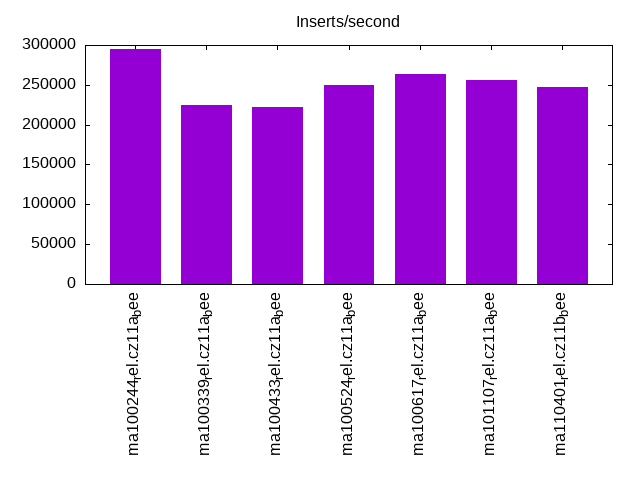
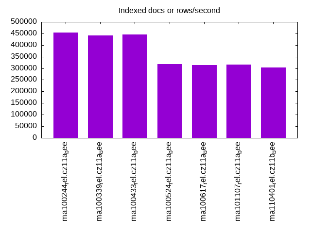
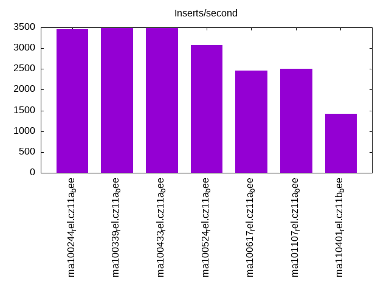
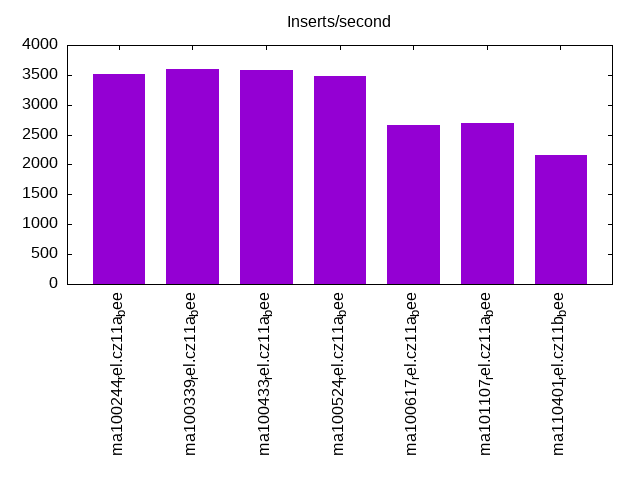
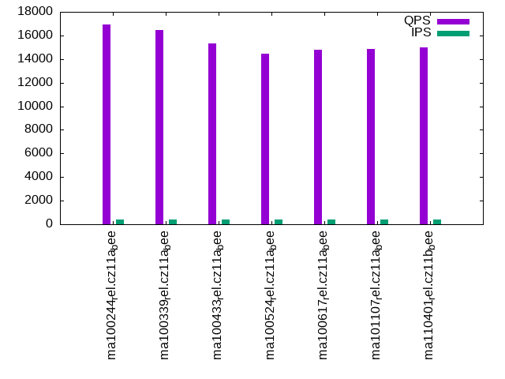
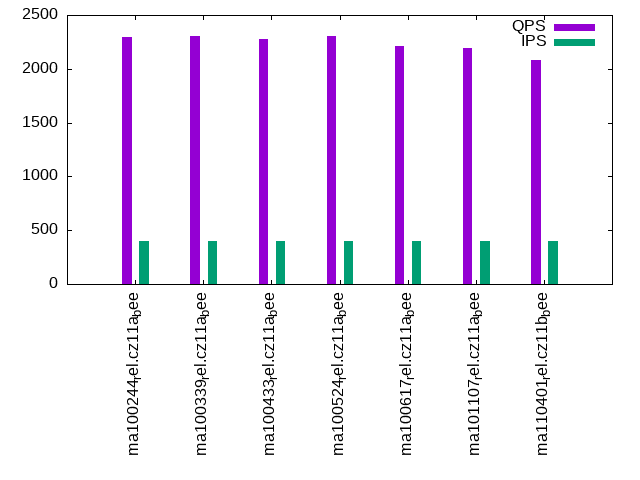
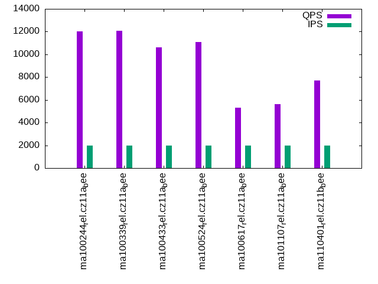
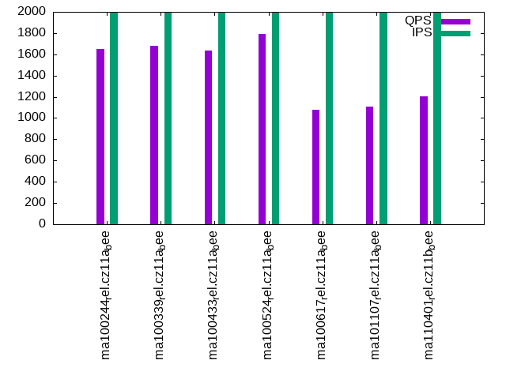
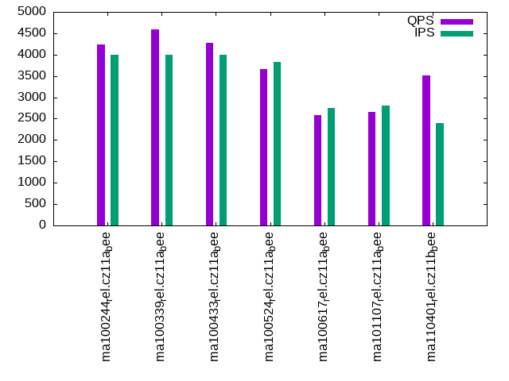
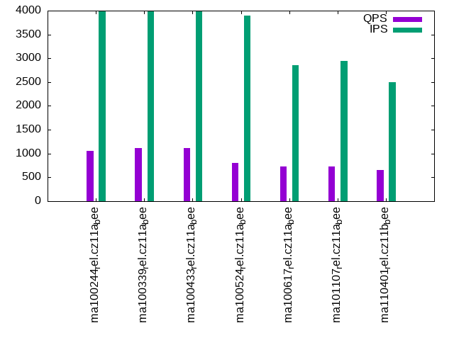

This is a report for the insert benchmark with 800M docs and 4 client(s). It is generated by scripts (bash, awk, sed) and Tufte might not be impressed. An overview of the insert benchmark is here and a short update is here. Below, by DBMS, I mean DBMS+version.config. An example is my8020.c10b40 where my means MySQL, 8020 is version 8.0.20 and c10b40 is the name for the configuration file.
The test server has 8 AMD cores, 16G RAM and an NVMe SSD. It is described here as the Beelink. The benchmark was run with 4 clients and there were 1 or 3 connections per client (1 for queries or inserts without rate limits, 1+1 for rate limited inserts+deletes). It uses 4 tables with a table per client. It loads 800M rows per table without secondary indexes, creates 3 secondary indexes per table, then inserts 2m rows per table with a delete per insert to avoid growing the table. It then does 6 read+write tests for 1800s each that do queries as fast as possible with 100,100,500,500,1000,1000 inserts/s and the same for deletes/s per client concurrent with the queries. The database is larger than memory. Clients and the DBMS share one server. The per-database configs are in the per-database subdirectories here.
The tested DBMS are:
The numbers are inserts/s for l.i0, l.i1 and l.i2, indexed docs (or rows) /s for l.x and queries/s for qr100, qp100 thru qr1000, qp1000" The values are the average rate over the entire test for inserts (IPS) and queries (QPS). The range of values for IPS and QPS is split into 3 parts: bottom 25%, middle 50%, top 25%. Values in the bottom 25% have a red background, values in the top 25% have a green background and values in the middle have no color. A gray background is used for values that can be ignored because the DBMS did not sustain the target insert rate. Red backgrounds are not used when the minimum value is within 80% of the max value.
| dbms | l.i0 | l.x | l.i1 | l.i2 | qr100 | qp100 | qr500 | qp500 | qr1000 | qp1000 |
|---|---|---|---|---|---|---|---|---|---|---|
| ma100244_rel.cz11a_bee | 295530 | 454804 | 3454 | 3516 | 16940 | 2297 | 12031 | 1652 | 4235 | 1059 |
| ma100339_rel.cz11a_bee | 225289 | 441014 | 3492 | 3596 | 16475 | 2304 | 12070 | 1681 | 4598 | 1121 |
| ma100433_rel.cz11a_bee | 222284 | 444939 | 3493 | 3587 | 15300 | 2278 | 10592 | 1638 | 4276 | 1110 |
| ma100524_rel.cz11a_bee | 250313 | 318725 | 3068 | 3486 | 14462 | 2301 | 11095 | 1791 | 3663 | 807 |
| ma100617_rel.cz11a_bee | 263158 | 313849 | 2467 | 2653 | 14793 | 2209 | 5332 | 1079 | 2584 | 722 |
| ma101107_rel.cz11a_bee | 256410 | 316206 | 2502 | 2689 | 14863 | 2193 | 5644 | 1106 | 2660 | 733 |
| ma110401_rel.cz11b_bee | 247295 | 303145 | 1425 | 2162 | 14996 | 2082 | 7724 | 1202 | 3504 | 653 |
This table has relative throughput, throughput for the DBMS relative to the DBMS in the first line, using the absolute throughput from the previous table. Values less than 0.95 have a yellow background. Values greater than 1.05 have a blue background.
| dbms | l.i0 | l.x | l.i1 | l.i2 | qr100 | qp100 | qr500 | qp500 | qr1000 | qp1000 |
|---|---|---|---|---|---|---|---|---|---|---|
| ma100244_rel.cz11a_bee | 1.00 | 1.00 | 1.00 | 1.00 | 1.00 | 1.00 | 1.00 | 1.00 | 1.00 | 1.00 |
| ma100339_rel.cz11a_bee | 0.76 | 0.97 | 1.01 | 1.02 | 0.97 | 1.00 | 1.00 | 1.02 | 1.09 | 1.06 |
| ma100433_rel.cz11a_bee | 0.75 | 0.98 | 1.01 | 1.02 | 0.90 | 0.99 | 0.88 | 0.99 | 1.01 | 1.05 |
| ma100524_rel.cz11a_bee | 0.85 | 0.70 | 0.89 | 0.99 | 0.85 | 1.00 | 0.92 | 1.08 | 0.86 | 0.76 |
| ma100617_rel.cz11a_bee | 0.89 | 0.69 | 0.71 | 0.75 | 0.87 | 0.96 | 0.44 | 0.65 | 0.61 | 0.68 |
| ma101107_rel.cz11a_bee | 0.87 | 0.70 | 0.72 | 0.76 | 0.88 | 0.95 | 0.47 | 0.67 | 0.63 | 0.69 |
| ma110401_rel.cz11b_bee | 0.84 | 0.67 | 0.41 | 0.61 | 0.89 | 0.91 | 0.64 | 0.73 | 0.83 | 0.62 |
This lists the average rate of inserts/s for the tests that do inserts concurrent with queries. For such tests the query rate is listed in the table above. The read+write tests are setup so that the insert rate should match the target rate every second. Cells that are not at least 95% of the target have a red background to indicate a failure to satisfy the target.
| dbms | qr100.L1 | qp100.L2 | qr500.L3 | qp500.L4 | qr1000.L5 | qp1000.L6 |
|---|---|---|---|---|---|---|
| ma100244_rel.cz11a_bee | 399 | 399 | 1993 | 1993 | 3989 | 3989 |
| ma100339_rel.cz11a_bee | 399 | 399 | 1994 | 1993 | 3987 | 3989 |
| ma100433_rel.cz11a_bee | 399 | 399 | 1993 | 1994 | 3989 | 3989 |
| ma100524_rel.cz11a_bee | 399 | 399 | 1994 | 1994 | 3832 | 3900 |
| ma100617_rel.cz11a_bee | 399 | 399 | 1994 | 1994 | 2749 | 2862 |
| ma101107_rel.cz11a_bee | 399 | 399 | 1994 | 1994 | 2808 | 2940 |
| ma110401_rel.cz11b_bee | 399 | 399 | 1994 | 1994 | 2399 | 2503 |
| target | 400 | 400 | 2000 | 2000 | 4000 | 4000 |
l.i0: load without secondary indexes. Graphs for performance per 1-second interval are here.
Average throughput:
Insert response time histogram: each cell has the percentage of responses that take <= the time in the header and max is the max response time in seconds. For the max column values in the top 25% of the range have a red background and in the bottom 25% of the range have a green background. The red background is not used when the min value is within 80% of the max value.
| dbms | 256us | 1ms | 4ms | 16ms | 64ms | 256ms | 1s | 4s | 16s | gt | max |
|---|---|---|---|---|---|---|---|---|---|---|---|
| ma100244_rel.cz11a_bee | 2.656 | 96.398 | 0.788 | 0.144 | 0.014 | 0.157 | |||||
| ma100339_rel.cz11a_bee | 0.068 | 97.582 | 2.152 | 0.193 | 0.005 | 0.187 | |||||
| ma100433_rel.cz11a_bee | 0.016 | 97.551 | 2.210 | 0.218 | 0.005 | 0.207 | |||||
| ma100524_rel.cz11a_bee | 0.125 | 98.790 | 0.806 | 0.260 | 0.019 | 0.184 | |||||
| ma100617_rel.cz11a_bee | 0.039 | 96.927 | 2.938 | 0.076 | 0.020 | 0.186 | |||||
| ma101107_rel.cz11a_bee | 0.106 | 97.277 | 2.565 | 0.032 | 0.020 | 0.179 | |||||
| ma110401_rel.cz11b_bee | 0.051 | 97.411 | 2.445 | 0.070 | 0.023 | nonzero | nonzero | 16.336 |
Performance metrics for the DBMS listed above. Some are normalized by throughput, others are not. Legend for results is here.
ips qps rps rmbps wps wmbps rpq rkbpq wpi wkbpi csps cpups cspq cpupq dbgb1 dbgb2 rss maxop p50 p99 tag 295530 0 1 0.0 1566.6 110.4 0.000 0.000 0.005 0.383 31043 78.1 0.105 21 52.6 68.5 10.6 0.157 74615 63631 ma100244_rel.cz11a_bee 225289 0 1 0.0 1286.7 91.7 0.000 0.000 0.006 0.417 31463 82.5 0.140 29 52.6 68.5 10.6 0.187 56737 45151 ma100339_rel.cz11a_bee 222284 0 0 0.0 1286.1 90.7 0.000 0.000 0.006 0.418 30684 82.3 0.138 30 52.6 68.5 NA 0.207 55939 43952 ma100433_rel.cz11a_bee 250313 0 0 0.0 1569.2 78.4 0.000 0.000 0.006 0.321 52907 80.0 0.211 26 52.6 68.5 10.3 0.184 63431 51544 ma100524_rel.cz11a_bee 263158 0 0 0.0 1301.8 74.5 0.000 0.000 0.005 0.290 42612 81.6 0.162 25 52.6 68.5 10.3 0.186 66428 55640 ma100617_rel.cz11a_bee 256410 0 1757 6.9 1275.2 74.8 0.007 0.027 0.005 0.299 36433 78.8 0.142 25 52.6 68.5 10.3 0.179 64630 54241 ma101107_rel.cz11a_bee 247295 0 1680 6.6 1259.5 72.2 0.007 0.027 0.005 0.299 35910 76.5 0.145 25 52.6 68.5 10.3 16.336 63865 0 ma110401_rel.cz11b_bee
l.x: create secondary indexes.
Average throughput:
Performance metrics for the DBMS listed above. Some are normalized by throughput, others are not. Legend for results is here.
ips qps rps rmbps wps wmbps rpq rkbpq wpi wkbpi csps cpups cspq cpupq dbgb1 dbgb2 rss maxop p50 p99 tag 454804 0 2802 403.7 3202.0 483.6 0.006 0.909 0.007 1.089 9558 46.0 0.021 8 121.2 137.0 10.7 0.002 NA NA ma100244_rel.cz11a_bee 441014 0 2725 391.5 3204.8 472.1 0.006 0.909 0.007 1.096 11034 45.8 0.025 8 121.2 137.0 10.7 0.002 NA NA ma100339_rel.cz11a_bee 444939 0 2768 394.9 3158.0 473.0 0.006 0.909 0.007 1.089 10304 46.0 0.023 8 119.9 135.7 NA 0.002 NA NA ma100433_rel.cz11a_bee 318725 0 1988 281.1 2193.2 317.6 0.006 0.903 0.007 1.020 13980 41.5 0.044 10 119.9 135.7 10.5 0.002 NA NA ma100524_rel.cz11a_bee 313849 0 2053 279.4 2279.2 314.8 0.007 0.912 0.007 1.027 12784 40.7 0.041 10 119.9 135.8 10.4 0.004 NA NA ma100617_rel.cz11a_bee 316206 0 2056 281.3 2193.8 314.4 0.007 0.911 0.007 1.018 12215 41.0 0.039 10 119.9 135.8 10.4 0.003 NA NA ma101107_rel.cz11a_bee 303145 0 2049 270.7 2045.4 300.4 0.007 0.914 0.007 1.015 12256 40.5 0.040 11 119.9 135.8 10.4 0.004 NA NA ma110401_rel.cz11b_bee
l.i1: continue load after secondary indexes created with 50 inserts per transaction. Graphs for performance per 1-second interval are here.
Average throughput:
Insert response time histogram: each cell has the percentage of responses that take <= the time in the header and max is the max response time in seconds. For the max column values in the top 25% of the range have a red background and in the bottom 25% of the range have a green background. The red background is not used when the min value is within 80% of the max value.
| dbms | 256us | 1ms | 4ms | 16ms | 64ms | 256ms | 1s | 4s | 16s | gt | max |
|---|---|---|---|---|---|---|---|---|---|---|---|
| ma100244_rel.cz11a_bee | 0.014 | 59.251 | 40.731 | 0.004 | 0.329 | ||||||
| ma100339_rel.cz11a_bee | 0.035 | 59.882 | 40.081 | 0.002 | 0.294 | ||||||
| ma100433_rel.cz11a_bee | 0.028 | 59.906 | 40.058 | 0.005 | 0.002 | 1.149 | |||||
| ma100524_rel.cz11a_bee | 0.002 | 68.431 | 31.485 | 0.080 | 0.002 | 1.742 | |||||
| ma100617_rel.cz11a_bee | 44.695 | 55.266 | 0.035 | 0.003 | 1.340 | ||||||
| ma101107_rel.cz11a_bee | 44.888 | 55.041 | 0.070 | 0.002 | 1.386 | ||||||
| ma110401_rel.cz11b_bee | 0.001 | 12.065 | 85.398 | 1.952 | 0.449 | 0.127 | 0.009 | 89.476 |
Delete response time histogram: each cell has the percentage of responses that take <= the time in the header and max is the max response time in seconds. For the max column values in the top 25% of the range have a red background and in the bottom 25% of the range have a green background. The red background is not used when the min value is within 80% of the max value.
| dbms | 256us | 1ms | 4ms | 16ms | 64ms | 256ms | 1s | 4s | 16s | gt | max |
|---|---|---|---|---|---|---|---|---|---|---|---|
| ma100244_rel.cz11a_bee | 22.092 | 74.875 | 3.033 | 0.132 | |||||||
| ma100339_rel.cz11a_bee | 27.937 | 68.852 | 3.212 | 0.142 | |||||||
| ma100433_rel.cz11a_bee | 27.994 | 68.633 | 3.370 | 0.003 | 0.001 | 1.011 | |||||
| ma100524_rel.cz11a_bee | 4.456 | 88.088 | 7.452 | 0.002 | 0.002 | 1.328 | |||||
| ma100617_rel.cz11a_bee | 2.784 | 58.591 | 38.608 | 0.016 | 0.002 | 1.277 | |||||
| ma101107_rel.cz11a_bee | 2.588 | 58.441 | 38.951 | 0.019 | 0.002 | 1.287 | |||||
| ma110401_rel.cz11b_bee | 0.179 | 30.652 | 67.982 | 0.843 | 0.262 | 0.076 | 0.006 | 69.143 |
Performance metrics for the DBMS listed above. Some are normalized by throughput, others are not. Legend for results is here.
ips qps rps rmbps wps wmbps rpq rkbpq wpi wkbpi csps cpups cspq cpupq dbgb1 dbgb2 rss maxop p50 p99 tag 3454 0 21124 330.1 25652.8 780.8 6.116 97.856 7.427 231.488 128538 48.5 37.216 1123 144.5 160.3 10.5 0.329 899 450 ma100244_rel.cz11a_bee 3492 0 21361 333.8 25663.2 788.5 6.118 97.888 7.350 231.246 137972 43.9 39.517 1006 144.5 160.3 10.5 0.294 899 450 ma100339_rel.cz11a_bee 3493 0 21456 335.3 26045.3 793.4 6.142 98.271 7.456 232.555 137846 44.1 39.459 1010 144.5 160.3 NA 1.149 899 499 ma100433_rel.cz11a_bee 3068 0 18675 291.8 19159.6 568.4 6.087 97.392 6.245 189.722 177122 35.9 57.732 936 144.5 160.3 10.2 1.742 799 449 ma100524_rel.cz11a_bee 2467 0 15190 237.3 13988.6 415.7 6.157 98.510 5.670 172.545 132083 24.6 53.536 798 144.5 160.3 10.1 1.340 649 449 ma100617_rel.cz11a_bee 2502 0 15562 241.3 14252.9 421.9 6.220 98.762 5.697 172.667 134681 24.7 53.832 790 144.5 160.3 10.1 1.386 649 400 ma101107_rel.cz11a_bee 1425 0 8914 138.3 8103.4 232.3 6.256 99.386 5.688 166.962 83563 15.1 58.653 848 144.5 160.3 10.1 89.476 350 0 ma110401_rel.cz11b_bee
l.i2: continue load after secondary indexes created with 5 inserts per transaction. Graphs for performance per 1-second interval are here.
Average throughput:
Insert response time histogram: each cell has the percentage of responses that take <= the time in the header and max is the max response time in seconds. For the max column values in the top 25% of the range have a red background and in the bottom 25% of the range have a green background. The red background is not used when the min value is within 80% of the max value.
| dbms | 256us | 1ms | 4ms | 16ms | 64ms | 256ms | 1s | 4s | 16s | gt | max |
|---|---|---|---|---|---|---|---|---|---|---|---|
| ma100244_rel.cz11a_bee | 0.002 | 44.376 | 52.512 | 3.110 | 0.063 | ||||||
| ma100339_rel.cz11a_bee | 0.001 | 46.973 | 50.045 | 2.981 | 0.053 | ||||||
| ma100433_rel.cz11a_bee | 0.001 | 47.153 | 49.950 | 2.895 | nonzero | 0.067 | |||||
| ma100524_rel.cz11a_bee | nonzero | 33.773 | 63.172 | 3.054 | nonzero | 0.065 | |||||
| ma100617_rel.cz11a_bee | 69.427 | 25.880 | 1.103 | 3.590 | 0.145 | ||||||
| ma101107_rel.cz11a_bee | nonzero | 69.375 | 25.656 | 1.358 | 3.610 | 0.132 | |||||
| ma110401_rel.cz11b_bee | 19.977 | 66.280 | 12.893 | 0.832 | 0.018 | 0.961 |
Delete response time histogram: each cell has the percentage of responses that take <= the time in the header and max is the max response time in seconds. For the max column values in the top 25% of the range have a red background and in the bottom 25% of the range have a green background. The red background is not used when the min value is within 80% of the max value.
| dbms | 256us | 1ms | 4ms | 16ms | 64ms | 256ms | 1s | 4s | 16s | gt | max |
|---|---|---|---|---|---|---|---|---|---|---|---|
| ma100244_rel.cz11a_bee | 0.015 | 61.501 | 37.162 | 1.322 | 0.060 | ||||||
| ma100339_rel.cz11a_bee | 0.017 | 62.058 | 36.539 | 1.385 | 0.052 | ||||||
| ma100433_rel.cz11a_bee | 0.010 | 61.668 | 36.945 | 1.377 | 0.060 | ||||||
| ma100524_rel.cz11a_bee | 0.008 | 61.320 | 37.576 | 1.096 | 0.063 | ||||||
| ma100617_rel.cz11a_bee | 0.009 | 75.540 | 20.761 | 0.414 | 3.277 | 0.139 | |||||
| ma101107_rel.cz11a_bee | 0.006 | 75.755 | 20.374 | 0.539 | 3.326 | 0.127 | |||||
| ma110401_rel.cz11b_bee | nonzero | 32.169 | 57.108 | 9.961 | 0.755 | 0.007 | 0.788 |
Performance metrics for the DBMS listed above. Some are normalized by throughput, others are not. Legend for results is here.
ips qps rps rmbps wps wmbps rpq rkbpq wpi wkbpi csps cpups cspq cpupq dbgb1 dbgb2 rss maxop p50 p99 tag 3516 0 19558 305.6 22973.1 693.7 5.562 88.992 6.533 202.004 125193 54.1 35.603 1231 144.5 160.3 10.5 0.063 879 734 ma100244_rel.cz11a_bee 3596 0 20000 312.5 23209.2 707.5 5.563 89.001 6.455 201.503 133234 50.4 37.056 1121 144.5 160.3 10.5 0.053 894 760 ma100339_rel.cz11a_bee 3587 0 20064 313.5 23375.3 708.1 5.593 89.488 6.516 202.119 132793 50.7 37.017 1131 144.5 160.3 NA 0.067 899 744 ma100433_rel.cz11a_bee 3486 0 19197 300.0 18473.5 557.5 5.507 88.116 5.300 163.786 180032 45.6 51.647 1047 144.5 160.3 10.2 0.065 874 796 ma100524_rel.cz11a_bee 2653 0 14929 233.3 12976.9 391.3 5.627 90.027 4.891 151.016 130087 31.2 49.028 941 144.5 160.3 10.1 0.145 665 574 ma100617_rel.cz11a_bee 2689 0 15918 238.9 13076.0 394.0 5.920 90.965 4.863 150.021 133310 31.1 49.576 925 144.5 160.3 10.1 0.132 679 594 ma101107_rel.cz11a_bee 2162 0 12869 193.2 10338.0 301.0 5.952 91.480 4.781 142.565 110399 25.3 51.061 936 144.5 160.3 10.1 0.961 549 30 ma110401_rel.cz11b_bee
qr100.L1: range queries with 100 insert/s per client. Graphs for performance per 1-second interval are here.
Average throughput:
Query response time histogram: each cell has the percentage of responses that take <= the time in the header and max is the max response time in seconds. For max values in the top 25% of the range have a red background and in the bottom 25% of the range have a green background. The red background is not used when the min value is within 80% of the max value.
| dbms | 256us | 1ms | 4ms | 16ms | 64ms | 256ms | 1s | 4s | 16s | gt | max |
|---|---|---|---|---|---|---|---|---|---|---|---|
| ma100244_rel.cz11a_bee | 79.502 | 20.217 | 0.266 | 0.015 | nonzero | 0.036 | |||||
| ma100339_rel.cz11a_bee | 75.787 | 23.942 | 0.261 | 0.009 | nonzero | 0.023 | |||||
| ma100433_rel.cz11a_bee | 65.194 | 34.507 | 0.289 | 0.010 | nonzero | 0.029 | |||||
| ma100524_rel.cz11a_bee | 57.324 | 42.356 | 0.304 | 0.016 | nonzero | 0.024 | |||||
| ma100617_rel.cz11a_bee | 61.901 | 37.775 | 0.289 | 0.027 | 0.007 | 0.051 | |||||
| ma101107_rel.cz11a_bee | 62.685 | 36.995 | 0.285 | 0.028 | 0.007 | 0.047 | |||||
| ma110401_rel.cz11b_bee | 64.950 | 34.737 | 0.269 | 0.032 | 0.012 | 0.050 |
Insert response time histogram: each cell has the percentage of responses that take <= the time in the header and max is the max response time in seconds. For max values in the top 25% of the range have a red background and in the bottom 25% of the range have a green background. The red background is not used when the min value is within 80% of the max value.
| dbms | 256us | 1ms | 4ms | 16ms | 64ms | 256ms | 1s | 4s | 16s | gt | max |
|---|---|---|---|---|---|---|---|---|---|---|---|
| ma100244_rel.cz11a_bee | 0.444 | 98.750 | 0.806 | 0.108 | |||||||
| ma100339_rel.cz11a_bee | 1.222 | 98.326 | 0.451 | 0.101 | |||||||
| ma100433_rel.cz11a_bee | 1.056 | 98.590 | 0.354 | 0.105 | |||||||
| ma100524_rel.cz11a_bee | 0.042 | 98.576 | 1.382 | 0.080 | |||||||
| ma100617_rel.cz11a_bee | 2.764 | 90.861 | 6.375 | 0.093 | |||||||
| ma101107_rel.cz11a_bee | 1.882 | 92.069 | 6.049 | 0.100 | |||||||
| ma110401_rel.cz11b_bee | 2.528 | 91.500 | 5.972 | 0.103 |
Delete response time histogram: each cell has the percentage of responses that take <= the time in the header and max is the max response time in seconds. For max values in the top 25% of the range have a red background and in the bottom 25% of the range have a green background. The red background is not used when the min value is within 80% of the max value.
| dbms | 256us | 1ms | 4ms | 16ms | 64ms | 256ms | 1s | 4s | 16s | gt | max |
|---|---|---|---|---|---|---|---|---|---|---|---|
| ma100244_rel.cz11a_bee | 34.861 | 65.049 | 0.090 | 0.085 | |||||||
| ma100339_rel.cz11a_bee | 60.556 | 39.417 | 0.028 | 0.080 | |||||||
| ma100433_rel.cz11a_bee | 54.653 | 45.319 | 0.028 | 0.082 | |||||||
| ma100524_rel.cz11a_bee | 0.722 | 99.278 | 0.057 | ||||||||
| ma100617_rel.cz11a_bee | 41.597 | 56.806 | 1.597 | 0.083 | |||||||
| ma101107_rel.cz11a_bee | 37.271 | 61.243 | 1.486 | 0.089 | |||||||
| ma110401_rel.cz11b_bee | 38.222 | 60.222 | 1.556 | 0.086 |
Performance metrics for the DBMS listed above. Some are normalized by throughput, others are not. Legend for results is here.
ips qps rps rmbps wps wmbps rpq rkbpq wpi wkbpi csps cpups cspq cpupq dbgb1 dbgb2 rss maxop p50 p99 tag 399 16940 2520 39.4 4792.0 145.6 0.149 2.380 12.016 373.871 82738 53.8 4.884 254 144.5 160.3 10.5 0.036 4298 2222 ma100244_rel.cz11a_bee 399 16475 2518 39.3 4771.4 146.1 0.153 2.445 11.964 375.204 81761 53.6 4.963 260 144.5 160.3 10.5 0.023 4171 2255 ma100339_rel.cz11a_bee 399 15300 2540 39.7 4795.6 145.7 0.166 2.656 12.025 374.165 77187 53.6 5.045 280 144.5 160.3 NA 0.029 3836 1998 ma100433_rel.cz11a_bee 399 14462 2530 39.5 1697.9 51.6 0.175 2.799 4.258 132.561 69551 52.4 4.809 290 144.5 160.3 10.2 0.024 3644 2030 ma100524_rel.cz11a_bee 399 14793 2520 39.4 1920.2 57.9 0.170 2.725 4.815 148.666 71499 51.2 4.833 277 144.5 160.3 10.1 0.051 3725 2142 ma100617_rel.cz11a_bee 399 14863 2538 39.4 1920.9 57.9 0.171 2.717 4.817 148.600 71856 51.3 4.835 276 144.5 160.3 10.1 0.047 3756 2094 ma101107_rel.cz11a_bee 399 14996 2534 39.4 1989.8 57.6 0.169 2.689 4.992 147.863 72772 50.9 4.853 272 144.5 160.3 10.1 0.050 3788 2126 ma110401_rel.cz11b_bee
qp100.L2: point queries with 100 insert/s per client. Graphs for performance per 1-second interval are here.
Average throughput:
Query response time histogram: each cell has the percentage of responses that take <= the time in the header and max is the max response time in seconds. For max values in the top 25% of the range have a red background and in the bottom 25% of the range have a green background. The red background is not used when the min value is within 80% of the max value.
| dbms | 256us | 1ms | 4ms | 16ms | 64ms | 256ms | 1s | 4s | 16s | gt | max |
|---|---|---|---|---|---|---|---|---|---|---|---|
| ma100244_rel.cz11a_bee | 0.494 | 96.546 | 2.950 | 0.010 | 0.045 | ||||||
| ma100339_rel.cz11a_bee | 0.494 | 96.633 | 2.862 | 0.011 | 0.046 | ||||||
| ma100433_rel.cz11a_bee | 0.364 | 96.699 | 2.926 | 0.011 | 0.049 | ||||||
| ma100524_rel.cz11a_bee | 0.264 | 99.464 | 0.266 | 0.006 | 0.039 | ||||||
| ma100617_rel.cz11a_bee | 0.649 | 96.765 | 1.931 | 0.655 | 0.052 | ||||||
| ma101107_rel.cz11a_bee | 0.519 | 96.872 | 2.328 | 0.280 | 0.050 | ||||||
| ma110401_rel.cz11b_bee | 0.437 | 96.316 | 2.919 | 0.328 | 0.054 |
Insert response time histogram: each cell has the percentage of responses that take <= the time in the header and max is the max response time in seconds. For max values in the top 25% of the range have a red background and in the bottom 25% of the range have a green background. The red background is not used when the min value is within 80% of the max value.
| dbms | 256us | 1ms | 4ms | 16ms | 64ms | 256ms | 1s | 4s | 16s | gt | max |
|---|---|---|---|---|---|---|---|---|---|---|---|
| ma100244_rel.cz11a_bee | 0.167 | 96.729 | 3.104 | 0.160 | |||||||
| ma100339_rel.cz11a_bee | 0.215 | 96.889 | 2.896 | 0.187 | |||||||
| ma100433_rel.cz11a_bee | 0.319 | 96.910 | 2.771 | 0.158 | |||||||
| ma100524_rel.cz11a_bee | 99.979 | 0.021 | 0.073 | ||||||||
| ma100617_rel.cz11a_bee | 0.111 | 99.806 | 0.083 | 0.090 | |||||||
| ma101107_rel.cz11a_bee | 0.069 | 99.806 | 0.125 | 0.092 | |||||||
| ma110401_rel.cz11b_bee | 0.111 | 99.819 | 0.069 | 0.102 |
Delete response time histogram: each cell has the percentage of responses that take <= the time in the header and max is the max response time in seconds. For max values in the top 25% of the range have a red background and in the bottom 25% of the range have a green background. The red background is not used when the min value is within 80% of the max value.
| dbms | 256us | 1ms | 4ms | 16ms | 64ms | 256ms | 1s | 4s | 16s | gt | max |
|---|---|---|---|---|---|---|---|---|---|---|---|
| ma100244_rel.cz11a_bee | 19.361 | 79.667 | 0.972 | 0.120 | |||||||
| ma100339_rel.cz11a_bee | 26.465 | 72.639 | 0.896 | 0.124 | |||||||
| ma100433_rel.cz11a_bee | 31.396 | 67.750 | 0.854 | 0.139 | |||||||
| ma100524_rel.cz11a_bee | 10.403 | 89.590 | 0.007 | 0.065 | |||||||
| ma100617_rel.cz11a_bee | 14.792 | 85.146 | 0.062 | 0.086 | |||||||
| ma101107_rel.cz11a_bee | 12.993 | 86.972 | 0.035 | 0.071 | |||||||
| ma110401_rel.cz11b_bee | 17.799 | 82.188 | 0.014 | 0.091 |
Performance metrics for the DBMS listed above. Some are normalized by throughput, others are not. Legend for results is here.
ips qps rps rmbps wps wmbps rpq rkbpq wpi wkbpi csps cpups cspq cpupq dbgb1 dbgb2 rss maxop p50 p99 tag 399 2297 22184 346.6 4747.2 144.2 9.659 154.552 11.904 370.166 68364 20.5 29.767 714 144.5 160.3 10.5 0.045 575 495 ma100244_rel.cz11a_bee 399 2304 22243 347.6 4741.3 145.1 9.653 154.455 11.889 372.623 69457 20.2 30.143 701 144.5 160.3 10.5 0.046 575 495 ma100339_rel.cz11a_bee 399 2278 22109 345.4 4760.6 144.6 9.704 155.264 11.937 371.211 68948 20.4 30.263 716 144.5 160.3 NA 0.049 575 479 ma100433_rel.cz11a_bee 399 2301 22388 349.8 2155.9 65.1 9.729 155.657 5.406 167.126 71513 19.9 31.075 692 144.5 160.3 10.2 0.039 575 543 ma100524_rel.cz11a_bee 399 2209 21425 334.8 2229.3 66.8 9.697 155.152 5.590 171.651 66032 17.9 29.887 648 144.5 160.3 10.1 0.052 559 480 ma100617_rel.cz11a_bee 399 2193 21306 332.7 2221.8 66.6 9.715 155.342 5.571 170.971 65904 17.9 30.052 653 144.5 160.3 10.1 0.050 544 495 ma101107_rel.cz11a_bee 399 2082 20345 317.7 2270.9 65.3 9.771 156.217 5.694 167.628 63395 17.2 30.445 661 144.5 160.3 10.1 0.054 527 463 ma110401_rel.cz11b_bee
qr500.L3: range queries with 500 insert/s per client. Graphs for performance per 1-second interval are here.
Average throughput:
Query response time histogram: each cell has the percentage of responses that take <= the time in the header and max is the max response time in seconds. For max values in the top 25% of the range have a red background and in the bottom 25% of the range have a green background. The red background is not used when the min value is within 80% of the max value.
| dbms | 256us | 1ms | 4ms | 16ms | 64ms | 256ms | 1s | 4s | 16s | gt | max |
|---|---|---|---|---|---|---|---|---|---|---|---|
| ma100244_rel.cz11a_bee | 72.967 | 23.397 | 3.042 | 0.588 | 0.006 | nonzero | 0.070 | ||||
| ma100339_rel.cz11a_bee | 69.614 | 26.967 | 2.865 | 0.548 | 0.006 | 0.052 | |||||
| ma100433_rel.cz11a_bee | 57.205 | 38.241 | 3.801 | 0.746 | 0.006 | 0.051 | |||||
| ma100524_rel.cz11a_bee | 58.367 | 37.689 | 3.405 | 0.531 | 0.008 | 0.064 | |||||
| ma100617_rel.cz11a_bee | 35.361 | 52.876 | 10.090 | 1.258 | 0.411 | 0.003 | 0.102 | ||||
| ma101107_rel.cz11a_bee | 37.070 | 51.781 | 9.595 | 1.160 | 0.393 | 0.001 | 0.087 | ||||
| ma110401_rel.cz11b_bee | 47.105 | 44.564 | 7.392 | 0.832 | 0.104 | 0.002 | nonzero | 0.567 |
Insert response time histogram: each cell has the percentage of responses that take <= the time in the header and max is the max response time in seconds. For max values in the top 25% of the range have a red background and in the bottom 25% of the range have a green background. The red background is not used when the min value is within 80% of the max value.
| dbms | 256us | 1ms | 4ms | 16ms | 64ms | 256ms | 1s | 4s | 16s | gt | max |
|---|---|---|---|---|---|---|---|---|---|---|---|
| ma100244_rel.cz11a_bee | 0.026 | 82.685 | 17.289 | 0.137 | |||||||
| ma100339_rel.cz11a_bee | 0.033 | 84.344 | 15.622 | 0.132 | |||||||
| ma100433_rel.cz11a_bee | 0.013 | 84.037 | 15.950 | 0.143 | |||||||
| ma100524_rel.cz11a_bee | 0.026 | 89.817 | 10.154 | 0.003 | 0.279 | ||||||
| ma100617_rel.cz11a_bee | 0.040 | 53.508 | 46.451 | 0.224 | |||||||
| ma101107_rel.cz11a_bee | 0.015 | 55.196 | 44.788 | 0.001 | 0.257 | ||||||
| ma110401_rel.cz11b_bee | 0.022 | 80.022 | 19.656 | 0.300 | 0.651 |
Delete response time histogram: each cell has the percentage of responses that take <= the time in the header and max is the max response time in seconds. For max values in the top 25% of the range have a red background and in the bottom 25% of the range have a green background. The red background is not used when the min value is within 80% of the max value.
| dbms | 256us | 1ms | 4ms | 16ms | 64ms | 256ms | 1s | 4s | 16s | gt | max |
|---|---|---|---|---|---|---|---|---|---|---|---|
| ma100244_rel.cz11a_bee | 4.985 | 94.058 | 0.957 | 0.109 | |||||||
| ma100339_rel.cz11a_bee | 10.231 | 88.763 | 1.007 | 0.098 | |||||||
| ma100433_rel.cz11a_bee | 8.369 | 90.517 | 1.114 | 0.127 | |||||||
| ma100524_rel.cz11a_bee | 13.222 | 85.461 | 1.317 | 0.209 | |||||||
| ma100617_rel.cz11a_bee | 3.647 | 59.033 | 37.319 | 0.211 | |||||||
| ma101107_rel.cz11a_bee | 3.321 | 63.836 | 32.843 | 0.226 | |||||||
| ma110401_rel.cz11b_bee | 1.256 | 88.981 | 9.536 | 0.228 | 0.531 |
Performance metrics for the DBMS listed above. Some are normalized by throughput, others are not. Legend for results is here.
ips qps rps rmbps wps wmbps rpq rkbpq wpi wkbpi csps cpups cspq cpupq dbgb1 dbgb2 rss maxop p50 p99 tag 1993 12031 14160 221.2 13064.1 398.0 1.177 18.831 6.554 204.481 106297 58.9 8.835 392 144.5 160.3 10.6 0.070 3053 1438 ma100244_rel.cz11a_bee 1994 12070 14163 221.3 12939.3 397.6 1.173 18.774 6.488 204.152 110456 57.1 9.151 378 144.5 160.3 10.5 0.052 3085 1502 ma100339_rel.cz11a_bee 1993 10592 14828 231.7 13073.3 398.7 1.400 22.398 6.559 204.826 107699 55.5 10.168 419 144.5 160.3 NA 0.051 2685 1438 ma100433_rel.cz11a_bee 1994 11095 14532 227.1 10449.1 314.1 1.310 20.956 5.239 161.276 130193 54.1 11.734 390 144.5 160.3 10.3 0.064 2877 1327 ma100524_rel.cz11a_bee 1994 5332 15655 244.6 9440.1 284.1 2.936 46.978 4.733 145.882 113210 37.8 21.233 567 144.5 160.3 10.1 0.102 1358 928 ma100617_rel.cz11a_bee 1994 5644 15767 245.2 9449.5 284.2 2.793 44.488 4.738 145.928 114781 38.5 20.335 546 144.5 160.3 10.1 0.087 1422 1039 ma101107_rel.cz11a_bee 1994 7724 14589 226.8 9866.2 286.4 1.889 30.075 4.947 147.048 120812 42.5 15.642 440 144.5 160.3 10.1 0.567 1983 815 ma110401_rel.cz11b_bee
qp500.L4: point queries with 500 insert/s per client. Graphs for performance per 1-second interval are here.
Average throughput:
Query response time histogram: each cell has the percentage of responses that take <= the time in the header and max is the max response time in seconds. For max values in the top 25% of the range have a red background and in the bottom 25% of the range have a green background. The red background is not used when the min value is within 80% of the max value.
| dbms | 256us | 1ms | 4ms | 16ms | 64ms | 256ms | 1s | 4s | 16s | gt | max |
|---|---|---|---|---|---|---|---|---|---|---|---|
| ma100244_rel.cz11a_bee | 0.019 | 86.688 | 13.260 | 0.033 | 0.045 | ||||||
| ma100339_rel.cz11a_bee | 0.019 | 87.554 | 12.395 | 0.033 | 0.045 | ||||||
| ma100433_rel.cz11a_bee | 0.012 | 87.221 | 12.734 | 0.034 | 0.048 | ||||||
| ma100524_rel.cz11a_bee | 0.025 | 92.463 | 7.458 | 0.054 | 0.055 | ||||||
| ma100617_rel.cz11a_bee | 0.012 | 86.311 | 10.879 | 2.794 | 0.004 | 0.093 | |||||
| ma101107_rel.cz11a_bee | 0.010 | 86.282 | 10.918 | 2.788 | 0.002 | 0.090 | |||||
| ma110401_rel.cz11b_bee | 0.006 | 79.246 | 19.897 | 0.843 | 0.007 | 0.002 | 0.526 |
Insert response time histogram: each cell has the percentage of responses that take <= the time in the header and max is the max response time in seconds. For max values in the top 25% of the range have a red background and in the bottom 25% of the range have a green background. The red background is not used when the min value is within 80% of the max value.
| dbms | 256us | 1ms | 4ms | 16ms | 64ms | 256ms | 1s | 4s | 16s | gt | max |
|---|---|---|---|---|---|---|---|---|---|---|---|
| ma100244_rel.cz11a_bee | 0.037 | 91.961 | 8.001 | 0.129 | |||||||
| ma100339_rel.cz11a_bee | 0.064 | 95.260 | 4.676 | 0.131 | |||||||
| ma100433_rel.cz11a_bee | 0.036 | 95.193 | 4.771 | 0.137 | |||||||
| ma100524_rel.cz11a_bee | 0.003 | 88.176 | 11.821 | 0.149 | |||||||
| ma100617_rel.cz11a_bee | 0.003 | 48.676 | 51.321 | 0.201 | |||||||
| ma101107_rel.cz11a_bee | 0.004 | 49.246 | 50.750 | 0.223 | |||||||
| ma110401_rel.cz11b_bee | 0.001 | 84.701 | 15.174 | 0.124 | 0.583 |
Delete response time histogram: each cell has the percentage of responses that take <= the time in the header and max is the max response time in seconds. For max values in the top 25% of the range have a red background and in the bottom 25% of the range have a green background. The red background is not used when the min value is within 80% of the max value.
| dbms | 256us | 1ms | 4ms | 16ms | 64ms | 256ms | 1s | 4s | 16s | gt | max |
|---|---|---|---|---|---|---|---|---|---|---|---|
| ma100244_rel.cz11a_bee | 1.128 | 97.836 | 1.036 | 0.107 | |||||||
| ma100339_rel.cz11a_bee | 2.303 | 97.082 | 0.615 | 0.111 | |||||||
| ma100433_rel.cz11a_bee | 2.207 | 97.354 | 0.439 | 0.105 | |||||||
| ma100524_rel.cz11a_bee | 1.542 | 95.978 | 2.481 | 0.126 | |||||||
| ma100617_rel.cz11a_bee | 1.044 | 57.247 | 41.708 | 0.172 | |||||||
| ma101107_rel.cz11a_bee | 0.700 | 61.590 | 37.710 | 0.167 | |||||||
| ma110401_rel.cz11b_bee | 0.126 | 90.749 | 9.026 | 0.099 | 0.573 |
Performance metrics for the DBMS listed above. Some are normalized by throughput, others are not. Legend for results is here.
ips qps rps rmbps wps wmbps rpq rkbpq wpi wkbpi csps cpups cspq cpupq dbgb1 dbgb2 rss maxop p50 p99 tag 1993 1652 26893 420.2 12805.5 387.5 16.278 260.453 6.424 199.072 101307 35.1 61.320 1700 144.5 160.3 10.6 0.045 416 384 ma100244_rel.cz11a_bee 1993 1681 27160 424.4 12796.4 387.8 16.157 258.512 6.420 199.209 106032 32.4 63.077 1542 144.5 160.3 10.5 0.045 416 384 ma100339_rel.cz11a_bee 1994 1638 26815 419.0 13212.4 387.7 16.368 261.883 6.625 199.050 105562 32.6 64.434 1592 144.5 160.3 NA 0.048 416 352 ma100433_rel.cz11a_bee 1994 1791 28112 439.2 10805.7 324.4 15.697 251.152 5.418 166.570 130510 30.8 72.874 1376 144.5 160.3 10.3 0.055 448 416 ma100524_rel.cz11a_bee 1994 1079 21712 339.2 9325.9 280.5 20.124 321.987 4.676 144.025 112567 25.5 104.335 1891 144.5 160.3 10.1 0.093 272 224 ma100617_rel.cz11a_bee 1994 1106 22059 343.6 9336.8 280.7 19.952 318.207 4.682 144.111 114273 25.5 103.359 1845 144.5 160.3 10.1 0.090 272 224 ma101107_rel.cz11a_bee 1994 1202 22938 357.3 9718.9 282.0 19.075 304.301 4.873 144.783 118159 23.3 98.261 1550 144.5 160.3 10.1 0.526 304 208 ma110401_rel.cz11b_bee
qr1000.L5: range queries with 1000 insert/s per client. Graphs for performance per 1-second interval are here.
Average throughput:
Query response time histogram: each cell has the percentage of responses that take <= the time in the header and max is the max response time in seconds. For max values in the top 25% of the range have a red background and in the bottom 25% of the range have a green background. The red background is not used when the min value is within 80% of the max value.
| dbms | 256us | 1ms | 4ms | 16ms | 64ms | 256ms | 1s | 4s | 16s | gt | max |
|---|---|---|---|---|---|---|---|---|---|---|---|
| ma100244_rel.cz11a_bee | 39.419 | 40.418 | 13.528 | 6.607 | 0.028 | nonzero | 0.070 | ||||
| ma100339_rel.cz11a_bee | 38.763 | 42.568 | 13.004 | 5.639 | 0.026 | 0.061 | |||||
| ma100433_rel.cz11a_bee | 28.120 | 51.773 | 13.936 | 6.143 | 0.028 | 0.055 | |||||
| ma100524_rel.cz11a_bee | 25.872 | 53.709 | 13.481 | 6.607 | 0.331 | nonzero | 0.076 | ||||
| ma100617_rel.cz11a_bee | 13.123 | 61.795 | 20.091 | 3.993 | 0.869 | 0.130 | 0.107 | ||||
| ma101107_rel.cz11a_bee | 13.400 | 61.690 | 19.955 | 3.963 | 0.949 | 0.042 | 0.099 | ||||
| ma110401_rel.cz11b_bee | 21.812 | 58.677 | 14.260 | 4.717 | 0.493 | 0.039 | 0.002 | nonzero | 2.120 |
Insert response time histogram: each cell has the percentage of responses that take <= the time in the header and max is the max response time in seconds. For max values in the top 25% of the range have a red background and in the bottom 25% of the range have a green background. The red background is not used when the min value is within 80% of the max value.
| dbms | 256us | 1ms | 4ms | 16ms | 64ms | 256ms | 1s | 4s | 16s | gt | max |
|---|---|---|---|---|---|---|---|---|---|---|---|
| ma100244_rel.cz11a_bee | 0.435 | 87.640 | 11.925 | 0.159 | |||||||
| ma100339_rel.cz11a_bee | 0.166 | 90.299 | 9.535 | 0.154 | |||||||
| ma100433_rel.cz11a_bee | 0.158 | 89.737 | 10.105 | 0.138 | |||||||
| ma100524_rel.cz11a_bee | 0.044 | 88.124 | 11.832 | 0.233 | |||||||
| ma100617_rel.cz11a_bee | 0.015 | 45.958 | 54.027 | 0.241 | |||||||
| ma101107_rel.cz11a_bee | 0.012 | 45.811 | 54.177 | 0.246 | |||||||
| ma110401_rel.cz11b_bee | 0.017 | 22.476 | 77.443 | 0.035 | 0.018 | 0.012 | 13.287 |
Delete response time histogram: each cell has the percentage of responses that take <= the time in the header and max is the max response time in seconds. For max values in the top 25% of the range have a red background and in the bottom 25% of the range have a green background. The red background is not used when the min value is within 80% of the max value.
| dbms | 256us | 1ms | 4ms | 16ms | 64ms | 256ms | 1s | 4s | 16s | gt | max |
|---|---|---|---|---|---|---|---|---|---|---|---|
| ma100244_rel.cz11a_bee | 2.567 | 96.190 | 1.243 | 0.131 | |||||||
| ma100339_rel.cz11a_bee | 6.813 | 91.891 | 1.297 | 0.147 | |||||||
| ma100433_rel.cz11a_bee | 6.694 | 91.983 | 1.324 | 0.136 | |||||||
| ma100524_rel.cz11a_bee | 3.183 | 88.794 | 8.024 | 0.195 | |||||||
| ma100617_rel.cz11a_bee | 1.949 | 53.167 | 44.884 | 0.235 | |||||||
| ma101107_rel.cz11a_bee | 1.751 | 53.507 | 44.742 | 0.229 | |||||||
| ma110401_rel.cz11b_bee | 0.043 | 50.208 | 49.703 | 0.017 | 0.019 | 0.009 | 11.336 |
Performance metrics for the DBMS listed above. Some are normalized by throughput, others are not. Legend for results is here.
ips qps rps rmbps wps wmbps rpq rkbpq wpi wkbpi csps cpups cspq cpupq dbgb1 dbgb2 rss maxop p50 p99 tag 3989 4235 27298 426.5 24174.0 733.8 6.445 103.127 6.060 188.378 145154 58.6 34.273 1107 144.5 160.3 10.6 0.070 1071 879 ma100244_rel.cz11a_bee 3987 4598 27543 430.4 24004.9 735.3 5.990 95.845 6.021 188.865 154393 54.8 33.579 953 144.5 160.3 10.5 0.061 1167 927 ma100339_rel.cz11a_bee 3989 4276 27620 431.6 24229.3 736.5 6.460 103.356 6.074 189.057 152948 55.0 35.772 1029 144.5 160.3 NA 0.055 1071 879 ma100433_rel.cz11a_bee 3832 3663 25735 402.1 18883.7 569.2 7.026 112.422 4.928 152.098 199778 50.8 54.545 1110 144.5 160.3 10.3 0.076 927 751 ma100524_rel.cz11a_bee 2749 2584 18955 296.2 12188.7 366.8 7.334 117.350 4.434 136.631 131166 35.2 50.753 1090 144.5 160.3 10.1 0.107 640 559 ma100617_rel.cz11a_bee 2808 2660 19522 303.4 12444.7 374.3 7.340 116.813 4.432 136.503 134903 35.6 50.719 1071 144.5 160.3 10.1 0.099 671 575 ma101107_rel.cz11a_bee 2399 3504 15703 244.0 10831.1 314.9 4.482 71.321 4.514 134.399 121572 34.1 34.697 779 144.5 160.3 10.1 2.120 895 32 ma110401_rel.cz11b_bee
qp1000.L6: point queries with 1000 insert/s per client. Graphs for performance per 1-second interval are here.
Average throughput:
Query response time histogram: each cell has the percentage of responses that take <= the time in the header and max is the max response time in seconds. For max values in the top 25% of the range have a red background and in the bottom 25% of the range have a green background. The red background is not used when the min value is within 80% of the max value.
| dbms | 256us | 1ms | 4ms | 16ms | 64ms | 256ms | 1s | 4s | 16s | gt | max |
|---|---|---|---|---|---|---|---|---|---|---|---|
| ma100244_rel.cz11a_bee | nonzero | 62.460 | 37.440 | 0.099 | nonzero | 0.073 | |||||
| ma100339_rel.cz11a_bee | 0.001 | 66.279 | 33.628 | 0.093 | 0.059 | ||||||
| ma100433_rel.cz11a_bee | nonzero | 66.041 | 33.865 | 0.094 | nonzero | 0.070 | |||||
| ma100524_rel.cz11a_bee | 42.084 | 55.874 | 2.042 | 0.063 | |||||||
| ma100617_rel.cz11a_bee | 74.525 | 21.400 | 3.776 | 0.299 | 0.123 | ||||||
| ma101107_rel.cz11a_bee | 74.208 | 21.697 | 3.918 | 0.177 | 0.115 | ||||||
| ma110401_rel.cz11b_bee | nonzero | 42.829 | 53.425 | 3.469 | 0.265 | 0.012 | nonzero | 1.399 |
Insert response time histogram: each cell has the percentage of responses that take <= the time in the header and max is the max response time in seconds. For max values in the top 25% of the range have a red background and in the bottom 25% of the range have a green background. The red background is not used when the min value is within 80% of the max value.
| dbms | 256us | 1ms | 4ms | 16ms | 64ms | 256ms | 1s | 4s | 16s | gt | max |
|---|---|---|---|---|---|---|---|---|---|---|---|
| ma100244_rel.cz11a_bee | 0.167 | 86.807 | 13.026 | 0.137 | |||||||
| ma100339_rel.cz11a_bee | 0.182 | 89.160 | 10.658 | 0.134 | |||||||
| ma100433_rel.cz11a_bee | 0.193 | 87.924 | 11.883 | 0.146 | |||||||
| ma100524_rel.cz11a_bee | 0.001 | 88.165 | 11.834 | 0.217 | |||||||
| ma100617_rel.cz11a_bee | 0.010 | 44.201 | 55.789 | 0.246 | |||||||
| ma101107_rel.cz11a_bee | 0.007 | 44.455 | 55.538 | 0.202 | |||||||
| ma110401_rel.cz11b_bee | 0.005 | 25.107 | 74.799 | 0.042 | 0.037 | 0.010 | 5.971 |
Delete response time histogram: each cell has the percentage of responses that take <= the time in the header and max is the max response time in seconds. For max values in the top 25% of the range have a red background and in the bottom 25% of the range have a green background. The red background is not used when the min value is within 80% of the max value.
| dbms | 256us | 1ms | 4ms | 16ms | 64ms | 256ms | 1s | 4s | 16s | gt | max |
|---|---|---|---|---|---|---|---|---|---|---|---|
| ma100244_rel.cz11a_bee | 2.444 | 95.992 | 1.563 | 0.135 | |||||||
| ma100339_rel.cz11a_bee | 5.112 | 93.485 | 1.403 | 0.115 | |||||||
| ma100433_rel.cz11a_bee | 4.751 | 93.608 | 1.641 | 0.115 | |||||||
| ma100524_rel.cz11a_bee | 2.983 | 89.651 | 7.366 | 0.198 | |||||||
| ma100617_rel.cz11a_bee | 0.825 | 50.004 | 49.171 | 0.205 | |||||||
| ma101107_rel.cz11a_bee | 0.808 | 50.262 | 48.931 | 0.201 | |||||||
| ma110401_rel.cz11b_bee | 0.030 | 47.512 | 52.390 | 0.021 | 0.042 | 0.005 | 5.236 |
Performance metrics for the DBMS listed above. Some are normalized by throughput, others are not. Legend for results is here.
ips qps rps rmbps wps wmbps rpq rkbpq wpi wkbpi csps cpups cspq cpupq dbgb1 dbgb2 rss maxop p50 p99 tag 3989 1059 31664 494.7 23404.6 708.9 29.900 478.395 5.867 181.989 144718 51.9 136.655 3921 144.5 160.3 10.6 0.073 272 224 ma100244_rel.cz11a_bee 3989 1121 32289 504.5 23259.5 710.4 28.793 460.694 5.831 182.368 153303 46.5 136.707 3317 144.5 160.3 10.5 0.059 288 240 ma100339_rel.cz11a_bee 3989 1110 32255 504.0 23500.1 712.2 29.061 464.977 5.891 182.819 152901 46.7 137.761 3366 144.5 160.3 NA 0.070 272 240 ma100433_rel.cz11a_bee 3900 807 28303 442.2 18905.2 569.4 35.081 561.290 4.847 149.504 204240 43.8 253.148 4343 144.5 160.3 10.3 0.063 208 176 ma100524_rel.cz11a_bee 2862 722 22592 353.0 12403.9 373.2 31.304 500.860 4.335 133.533 137246 29.6 190.170 3281 144.5 160.3 10.1 0.123 176 160 ma100617_rel.cz11a_bee 2940 733 23284 362.1 12753.1 383.5 31.752 505.702 4.338 133.591 141966 30.0 193.598 3273 144.5 160.3 10.1 0.115 176 160 ma101107_rel.cz11a_bee 2503 653 20079 312.4 11034.5 320.8 30.743 489.772 4.409 131.283 128260 24.0 196.386 2940 144.5 160.3 10.1 1.399 160 0 ma110401_rel.cz11b_bee
l.i0: load without secondary indexes
Performance metrics for all DBMS, not just the ones listed above. Some are normalized by throughput, others are not. Legend for results is here.
ips qps rps rmbps wps wmbps rpq rkbpq wpi wkbpi csps cpups cspq cpupq dbgb1 dbgb2 rss maxop p50 p99 tag 295530 0 1 0.0 1566.6 110.4 0.000 0.000 0.005 0.383 31043 78.1 0.105 21 52.6 68.5 10.6 0.157 74615 63631 ma100244_rel.cz11a_bee 225289 0 1 0.0 1286.7 91.7 0.000 0.000 0.006 0.417 31463 82.5 0.140 29 52.6 68.5 10.6 0.187 56737 45151 ma100339_rel.cz11a_bee 222284 0 0 0.0 1286.1 90.7 0.000 0.000 0.006 0.418 30684 82.3 0.138 30 52.6 68.5 NA 0.207 55939 43952 ma100433_rel.cz11a_bee 250313 0 0 0.0 1569.2 78.4 0.000 0.000 0.006 0.321 52907 80.0 0.211 26 52.6 68.5 10.3 0.184 63431 51544 ma100524_rel.cz11a_bee 263158 0 0 0.0 1301.8 74.5 0.000 0.000 0.005 0.290 42612 81.6 0.162 25 52.6 68.5 10.3 0.186 66428 55640 ma100617_rel.cz11a_bee 256410 0 1757 6.9 1275.2 74.8 0.007 0.027 0.005 0.299 36433 78.8 0.142 25 52.6 68.5 10.3 0.179 64630 54241 ma101107_rel.cz11a_bee 247295 0 1680 6.6 1259.5 72.2 0.007 0.027 0.005 0.299 35910 76.5 0.145 25 52.6 68.5 10.3 16.336 63865 0 ma110401_rel.cz11b_bee
l.x: create secondary indexes
Performance metrics for all DBMS, not just the ones listed above. Some are normalized by throughput, others are not. Legend for results is here.
ips qps rps rmbps wps wmbps rpq rkbpq wpi wkbpi csps cpups cspq cpupq dbgb1 dbgb2 rss maxop p50 p99 tag 454804 0 2802 403.7 3202.0 483.6 0.006 0.909 0.007 1.089 9558 46.0 0.021 8 121.2 137.0 10.7 0.002 NA NA ma100244_rel.cz11a_bee 441014 0 2725 391.5 3204.8 472.1 0.006 0.909 0.007 1.096 11034 45.8 0.025 8 121.2 137.0 10.7 0.002 NA NA ma100339_rel.cz11a_bee 444939 0 2768 394.9 3158.0 473.0 0.006 0.909 0.007 1.089 10304 46.0 0.023 8 119.9 135.7 NA 0.002 NA NA ma100433_rel.cz11a_bee 318725 0 1988 281.1 2193.2 317.6 0.006 0.903 0.007 1.020 13980 41.5 0.044 10 119.9 135.7 10.5 0.002 NA NA ma100524_rel.cz11a_bee 313849 0 2053 279.4 2279.2 314.8 0.007 0.912 0.007 1.027 12784 40.7 0.041 10 119.9 135.8 10.4 0.004 NA NA ma100617_rel.cz11a_bee 316206 0 2056 281.3 2193.8 314.4 0.007 0.911 0.007 1.018 12215 41.0 0.039 10 119.9 135.8 10.4 0.003 NA NA ma101107_rel.cz11a_bee 303145 0 2049 270.7 2045.4 300.4 0.007 0.914 0.007 1.015 12256 40.5 0.040 11 119.9 135.8 10.4 0.004 NA NA ma110401_rel.cz11b_bee
l.i1: continue load after secondary indexes created with 50 inserts per transaction
Performance metrics for all DBMS, not just the ones listed above. Some are normalized by throughput, others are not. Legend for results is here.
ips qps rps rmbps wps wmbps rpq rkbpq wpi wkbpi csps cpups cspq cpupq dbgb1 dbgb2 rss maxop p50 p99 tag 3454 0 21124 330.1 25652.8 780.8 6.116 97.856 7.427 231.488 128538 48.5 37.216 1123 144.5 160.3 10.5 0.329 899 450 ma100244_rel.cz11a_bee 3492 0 21361 333.8 25663.2 788.5 6.118 97.888 7.350 231.246 137972 43.9 39.517 1006 144.5 160.3 10.5 0.294 899 450 ma100339_rel.cz11a_bee 3493 0 21456 335.3 26045.3 793.4 6.142 98.271 7.456 232.555 137846 44.1 39.459 1010 144.5 160.3 NA 1.149 899 499 ma100433_rel.cz11a_bee 3068 0 18675 291.8 19159.6 568.4 6.087 97.392 6.245 189.722 177122 35.9 57.732 936 144.5 160.3 10.2 1.742 799 449 ma100524_rel.cz11a_bee 2467 0 15190 237.3 13988.6 415.7 6.157 98.510 5.670 172.545 132083 24.6 53.536 798 144.5 160.3 10.1 1.340 649 449 ma100617_rel.cz11a_bee 2502 0 15562 241.3 14252.9 421.9 6.220 98.762 5.697 172.667 134681 24.7 53.832 790 144.5 160.3 10.1 1.386 649 400 ma101107_rel.cz11a_bee 1425 0 8914 138.3 8103.4 232.3 6.256 99.386 5.688 166.962 83563 15.1 58.653 848 144.5 160.3 10.1 89.476 350 0 ma110401_rel.cz11b_bee
l.i2: continue load after secondary indexes created with 5 inserts per transaction
Performance metrics for all DBMS, not just the ones listed above. Some are normalized by throughput, others are not. Legend for results is here.
ips qps rps rmbps wps wmbps rpq rkbpq wpi wkbpi csps cpups cspq cpupq dbgb1 dbgb2 rss maxop p50 p99 tag 3516 0 19558 305.6 22973.1 693.7 5.562 88.992 6.533 202.004 125193 54.1 35.603 1231 144.5 160.3 10.5 0.063 879 734 ma100244_rel.cz11a_bee 3596 0 20000 312.5 23209.2 707.5 5.563 89.001 6.455 201.503 133234 50.4 37.056 1121 144.5 160.3 10.5 0.053 894 760 ma100339_rel.cz11a_bee 3587 0 20064 313.5 23375.3 708.1 5.593 89.488 6.516 202.119 132793 50.7 37.017 1131 144.5 160.3 NA 0.067 899 744 ma100433_rel.cz11a_bee 3486 0 19197 300.0 18473.5 557.5 5.507 88.116 5.300 163.786 180032 45.6 51.647 1047 144.5 160.3 10.2 0.065 874 796 ma100524_rel.cz11a_bee 2653 0 14929 233.3 12976.9 391.3 5.627 90.027 4.891 151.016 130087 31.2 49.028 941 144.5 160.3 10.1 0.145 665 574 ma100617_rel.cz11a_bee 2689 0 15918 238.9 13076.0 394.0 5.920 90.965 4.863 150.021 133310 31.1 49.576 925 144.5 160.3 10.1 0.132 679 594 ma101107_rel.cz11a_bee 2162 0 12869 193.2 10338.0 301.0 5.952 91.480 4.781 142.565 110399 25.3 51.061 936 144.5 160.3 10.1 0.961 549 30 ma110401_rel.cz11b_bee
qr100.L1: range queries with 100 insert/s per client
Performance metrics for all DBMS, not just the ones listed above. Some are normalized by throughput, others are not. Legend for results is here.
ips qps rps rmbps wps wmbps rpq rkbpq wpi wkbpi csps cpups cspq cpupq dbgb1 dbgb2 rss maxop p50 p99 tag 399 16940 2520 39.4 4792.0 145.6 0.149 2.380 12.016 373.871 82738 53.8 4.884 254 144.5 160.3 10.5 0.036 4298 2222 ma100244_rel.cz11a_bee 399 16475 2518 39.3 4771.4 146.1 0.153 2.445 11.964 375.204 81761 53.6 4.963 260 144.5 160.3 10.5 0.023 4171 2255 ma100339_rel.cz11a_bee 399 15300 2540 39.7 4795.6 145.7 0.166 2.656 12.025 374.165 77187 53.6 5.045 280 144.5 160.3 NA 0.029 3836 1998 ma100433_rel.cz11a_bee 399 14462 2530 39.5 1697.9 51.6 0.175 2.799 4.258 132.561 69551 52.4 4.809 290 144.5 160.3 10.2 0.024 3644 2030 ma100524_rel.cz11a_bee 399 14793 2520 39.4 1920.2 57.9 0.170 2.725 4.815 148.666 71499 51.2 4.833 277 144.5 160.3 10.1 0.051 3725 2142 ma100617_rel.cz11a_bee 399 14863 2538 39.4 1920.9 57.9 0.171 2.717 4.817 148.600 71856 51.3 4.835 276 144.5 160.3 10.1 0.047 3756 2094 ma101107_rel.cz11a_bee 399 14996 2534 39.4 1989.8 57.6 0.169 2.689 4.992 147.863 72772 50.9 4.853 272 144.5 160.3 10.1 0.050 3788 2126 ma110401_rel.cz11b_bee
qp100.L2: point queries with 100 insert/s per client
Performance metrics for all DBMS, not just the ones listed above. Some are normalized by throughput, others are not. Legend for results is here.
ips qps rps rmbps wps wmbps rpq rkbpq wpi wkbpi csps cpups cspq cpupq dbgb1 dbgb2 rss maxop p50 p99 tag 399 2297 22184 346.6 4747.2 144.2 9.659 154.552 11.904 370.166 68364 20.5 29.767 714 144.5 160.3 10.5 0.045 575 495 ma100244_rel.cz11a_bee 399 2304 22243 347.6 4741.3 145.1 9.653 154.455 11.889 372.623 69457 20.2 30.143 701 144.5 160.3 10.5 0.046 575 495 ma100339_rel.cz11a_bee 399 2278 22109 345.4 4760.6 144.6 9.704 155.264 11.937 371.211 68948 20.4 30.263 716 144.5 160.3 NA 0.049 575 479 ma100433_rel.cz11a_bee 399 2301 22388 349.8 2155.9 65.1 9.729 155.657 5.406 167.126 71513 19.9 31.075 692 144.5 160.3 10.2 0.039 575 543 ma100524_rel.cz11a_bee 399 2209 21425 334.8 2229.3 66.8 9.697 155.152 5.590 171.651 66032 17.9 29.887 648 144.5 160.3 10.1 0.052 559 480 ma100617_rel.cz11a_bee 399 2193 21306 332.7 2221.8 66.6 9.715 155.342 5.571 170.971 65904 17.9 30.052 653 144.5 160.3 10.1 0.050 544 495 ma101107_rel.cz11a_bee 399 2082 20345 317.7 2270.9 65.3 9.771 156.217 5.694 167.628 63395 17.2 30.445 661 144.5 160.3 10.1 0.054 527 463 ma110401_rel.cz11b_bee
qr500.L3: range queries with 500 insert/s per client
Performance metrics for all DBMS, not just the ones listed above. Some are normalized by throughput, others are not. Legend for results is here.
ips qps rps rmbps wps wmbps rpq rkbpq wpi wkbpi csps cpups cspq cpupq dbgb1 dbgb2 rss maxop p50 p99 tag 1993 12031 14160 221.2 13064.1 398.0 1.177 18.831 6.554 204.481 106297 58.9 8.835 392 144.5 160.3 10.6 0.070 3053 1438 ma100244_rel.cz11a_bee 1994 12070 14163 221.3 12939.3 397.6 1.173 18.774 6.488 204.152 110456 57.1 9.151 378 144.5 160.3 10.5 0.052 3085 1502 ma100339_rel.cz11a_bee 1993 10592 14828 231.7 13073.3 398.7 1.400 22.398 6.559 204.826 107699 55.5 10.168 419 144.5 160.3 NA 0.051 2685 1438 ma100433_rel.cz11a_bee 1994 11095 14532 227.1 10449.1 314.1 1.310 20.956 5.239 161.276 130193 54.1 11.734 390 144.5 160.3 10.3 0.064 2877 1327 ma100524_rel.cz11a_bee 1994 5332 15655 244.6 9440.1 284.1 2.936 46.978 4.733 145.882 113210 37.8 21.233 567 144.5 160.3 10.1 0.102 1358 928 ma100617_rel.cz11a_bee 1994 5644 15767 245.2 9449.5 284.2 2.793 44.488 4.738 145.928 114781 38.5 20.335 546 144.5 160.3 10.1 0.087 1422 1039 ma101107_rel.cz11a_bee 1994 7724 14589 226.8 9866.2 286.4 1.889 30.075 4.947 147.048 120812 42.5 15.642 440 144.5 160.3 10.1 0.567 1983 815 ma110401_rel.cz11b_bee
qp500.L4: point queries with 500 insert/s per client
Performance metrics for all DBMS, not just the ones listed above. Some are normalized by throughput, others are not. Legend for results is here.
ips qps rps rmbps wps wmbps rpq rkbpq wpi wkbpi csps cpups cspq cpupq dbgb1 dbgb2 rss maxop p50 p99 tag 1993 1652 26893 420.2 12805.5 387.5 16.278 260.453 6.424 199.072 101307 35.1 61.320 1700 144.5 160.3 10.6 0.045 416 384 ma100244_rel.cz11a_bee 1993 1681 27160 424.4 12796.4 387.8 16.157 258.512 6.420 199.209 106032 32.4 63.077 1542 144.5 160.3 10.5 0.045 416 384 ma100339_rel.cz11a_bee 1994 1638 26815 419.0 13212.4 387.7 16.368 261.883 6.625 199.050 105562 32.6 64.434 1592 144.5 160.3 NA 0.048 416 352 ma100433_rel.cz11a_bee 1994 1791 28112 439.2 10805.7 324.4 15.697 251.152 5.418 166.570 130510 30.8 72.874 1376 144.5 160.3 10.3 0.055 448 416 ma100524_rel.cz11a_bee 1994 1079 21712 339.2 9325.9 280.5 20.124 321.987 4.676 144.025 112567 25.5 104.335 1891 144.5 160.3 10.1 0.093 272 224 ma100617_rel.cz11a_bee 1994 1106 22059 343.6 9336.8 280.7 19.952 318.207 4.682 144.111 114273 25.5 103.359 1845 144.5 160.3 10.1 0.090 272 224 ma101107_rel.cz11a_bee 1994 1202 22938 357.3 9718.9 282.0 19.075 304.301 4.873 144.783 118159 23.3 98.261 1550 144.5 160.3 10.1 0.526 304 208 ma110401_rel.cz11b_bee
qr1000.L5: range queries with 1000 insert/s per client
Performance metrics for all DBMS, not just the ones listed above. Some are normalized by throughput, others are not. Legend for results is here.
ips qps rps rmbps wps wmbps rpq rkbpq wpi wkbpi csps cpups cspq cpupq dbgb1 dbgb2 rss maxop p50 p99 tag 3989 4235 27298 426.5 24174.0 733.8 6.445 103.127 6.060 188.378 145154 58.6 34.273 1107 144.5 160.3 10.6 0.070 1071 879 ma100244_rel.cz11a_bee 3987 4598 27543 430.4 24004.9 735.3 5.990 95.845 6.021 188.865 154393 54.8 33.579 953 144.5 160.3 10.5 0.061 1167 927 ma100339_rel.cz11a_bee 3989 4276 27620 431.6 24229.3 736.5 6.460 103.356 6.074 189.057 152948 55.0 35.772 1029 144.5 160.3 NA 0.055 1071 879 ma100433_rel.cz11a_bee 3832 3663 25735 402.1 18883.7 569.2 7.026 112.422 4.928 152.098 199778 50.8 54.545 1110 144.5 160.3 10.3 0.076 927 751 ma100524_rel.cz11a_bee 2749 2584 18955 296.2 12188.7 366.8 7.334 117.350 4.434 136.631 131166 35.2 50.753 1090 144.5 160.3 10.1 0.107 640 559 ma100617_rel.cz11a_bee 2808 2660 19522 303.4 12444.7 374.3 7.340 116.813 4.432 136.503 134903 35.6 50.719 1071 144.5 160.3 10.1 0.099 671 575 ma101107_rel.cz11a_bee 2399 3504 15703 244.0 10831.1 314.9 4.482 71.321 4.514 134.399 121572 34.1 34.697 779 144.5 160.3 10.1 2.120 895 32 ma110401_rel.cz11b_bee
qp1000.L6: point queries with 1000 insert/s per client
Performance metrics for all DBMS, not just the ones listed above. Some are normalized by throughput, others are not. Legend for results is here.
ips qps rps rmbps wps wmbps rpq rkbpq wpi wkbpi csps cpups cspq cpupq dbgb1 dbgb2 rss maxop p50 p99 tag 3989 1059 31664 494.7 23404.6 708.9 29.900 478.395 5.867 181.989 144718 51.9 136.655 3921 144.5 160.3 10.6 0.073 272 224 ma100244_rel.cz11a_bee 3989 1121 32289 504.5 23259.5 710.4 28.793 460.694 5.831 182.368 153303 46.5 136.707 3317 144.5 160.3 10.5 0.059 288 240 ma100339_rel.cz11a_bee 3989 1110 32255 504.0 23500.1 712.2 29.061 464.977 5.891 182.819 152901 46.7 137.761 3366 144.5 160.3 NA 0.070 272 240 ma100433_rel.cz11a_bee 3900 807 28303 442.2 18905.2 569.4 35.081 561.290 4.847 149.504 204240 43.8 253.148 4343 144.5 160.3 10.3 0.063 208 176 ma100524_rel.cz11a_bee 2862 722 22592 353.0 12403.9 373.2 31.304 500.860 4.335 133.533 137246 29.6 190.170 3281 144.5 160.3 10.1 0.123 176 160 ma100617_rel.cz11a_bee 2940 733 23284 362.1 12753.1 383.5 31.752 505.702 4.338 133.591 141966 30.0 193.598 3273 144.5 160.3 10.1 0.115 176 160 ma101107_rel.cz11a_bee 2503 653 20079 312.4 11034.5 320.8 30.743 489.772 4.409 131.283 128260 24.0 196.386 2940 144.5 160.3 10.1 1.399 160 0 ma110401_rel.cz11b_bee
Insert response time histogram
256us 1ms 4ms 16ms 64ms 256ms 1s 4s 16s gt max tag 0.000 2.656 96.398 0.788 0.144 0.014 0.000 0.000 0.000 0.000 0.157 ma100244_rel.cz11a_bee 0.000 0.068 97.582 2.152 0.193 0.005 0.000 0.000 0.000 0.000 0.187 ma100339_rel.cz11a_bee 0.000 0.016 97.551 2.210 0.218 0.005 0.000 0.000 0.000 0.000 0.207 ma100433_rel.cz11a_bee 0.000 0.125 98.790 0.806 0.260 0.019 0.000 0.000 0.000 0.000 0.184 ma100524_rel.cz11a_bee 0.000 0.039 96.927 2.938 0.076 0.020 0.000 0.000 0.000 0.000 0.186 ma100617_rel.cz11a_bee 0.000 0.106 97.277 2.565 0.032 0.020 0.000 0.000 0.000 0.000 0.179 ma101107_rel.cz11a_bee 0.000 0.051 97.411 2.445 0.070 0.023 0.000 0.000 nonzero nonzero 16.336 ma110401_rel.cz11b_bee
TODO - determine whether there is data for create index response time
Insert response time histogram
256us 1ms 4ms 16ms 64ms 256ms 1s 4s 16s gt max tag 0.000 0.000 0.000 0.014 59.251 40.731 0.004 0.000 0.000 0.000 0.329 ma100244_rel.cz11a_bee 0.000 0.000 0.000 0.035 59.882 40.081 0.002 0.000 0.000 0.000 0.294 ma100339_rel.cz11a_bee 0.000 0.000 0.000 0.028 59.906 40.058 0.005 0.002 0.000 0.000 1.149 ma100433_rel.cz11a_bee 0.000 0.000 0.000 0.002 68.431 31.485 0.080 0.002 0.000 0.000 1.742 ma100524_rel.cz11a_bee 0.000 0.000 0.000 0.000 44.695 55.266 0.035 0.003 0.000 0.000 1.340 ma100617_rel.cz11a_bee 0.000 0.000 0.000 0.000 44.888 55.041 0.070 0.002 0.000 0.000 1.386 ma101107_rel.cz11a_bee 0.000 0.000 0.000 0.001 12.065 85.398 1.952 0.449 0.127 0.009 89.476 ma110401_rel.cz11b_bee
Delete response time histogram
256us 1ms 4ms 16ms 64ms 256ms 1s 4s 16s gt max tag 0.000 0.000 0.000 22.092 74.875 3.033 0.000 0.000 0.000 0.000 0.132 ma100244_rel.cz11a_bee 0.000 0.000 0.000 27.937 68.852 3.212 0.000 0.000 0.000 0.000 0.142 ma100339_rel.cz11a_bee 0.000 0.000 0.000 27.994 68.633 3.370 0.003 0.001 0.000 0.000 1.011 ma100433_rel.cz11a_bee 0.000 0.000 0.000 4.456 88.088 7.452 0.002 0.002 0.000 0.000 1.328 ma100524_rel.cz11a_bee 0.000 0.000 0.000 2.784 58.591 38.608 0.016 0.002 0.000 0.000 1.277 ma100617_rel.cz11a_bee 0.000 0.000 0.000 2.588 58.441 38.951 0.019 0.002 0.000 0.000 1.287 ma101107_rel.cz11a_bee 0.000 0.000 0.000 0.179 30.652 67.982 0.843 0.262 0.076 0.006 69.143 ma110401_rel.cz11b_bee
Insert response time histogram
256us 1ms 4ms 16ms 64ms 256ms 1s 4s 16s gt max tag 0.000 0.002 44.376 52.512 3.110 0.000 0.000 0.000 0.000 0.000 0.063 ma100244_rel.cz11a_bee 0.000 0.001 46.973 50.045 2.981 0.000 0.000 0.000 0.000 0.000 0.053 ma100339_rel.cz11a_bee 0.000 0.001 47.153 49.950 2.895 nonzero 0.000 0.000 0.000 0.000 0.067 ma100433_rel.cz11a_bee 0.000 nonzero 33.773 63.172 3.054 nonzero 0.000 0.000 0.000 0.000 0.065 ma100524_rel.cz11a_bee 0.000 0.000 69.427 25.880 1.103 3.590 0.000 0.000 0.000 0.000 0.145 ma100617_rel.cz11a_bee 0.000 nonzero 69.375 25.656 1.358 3.610 0.000 0.000 0.000 0.000 0.132 ma101107_rel.cz11a_bee 0.000 0.000 19.977 66.280 12.893 0.832 0.018 0.000 0.000 0.000 0.961 ma110401_rel.cz11b_bee
Delete response time histogram
256us 1ms 4ms 16ms 64ms 256ms 1s 4s 16s gt max tag 0.000 0.015 61.501 37.162 1.322 0.000 0.000 0.000 0.000 0.000 0.060 ma100244_rel.cz11a_bee 0.000 0.017 62.058 36.539 1.385 0.000 0.000 0.000 0.000 0.000 0.052 ma100339_rel.cz11a_bee 0.000 0.010 61.668 36.945 1.377 0.000 0.000 0.000 0.000 0.000 0.060 ma100433_rel.cz11a_bee 0.000 0.008 61.320 37.576 1.096 0.000 0.000 0.000 0.000 0.000 0.063 ma100524_rel.cz11a_bee 0.000 0.009 75.540 20.761 0.414 3.277 0.000 0.000 0.000 0.000 0.139 ma100617_rel.cz11a_bee 0.000 0.006 75.755 20.374 0.539 3.326 0.000 0.000 0.000 0.000 0.127 ma101107_rel.cz11a_bee 0.000 nonzero 32.169 57.108 9.961 0.755 0.007 0.000 0.000 0.000 0.788 ma110401_rel.cz11b_bee
Query response time histogram
256us 1ms 4ms 16ms 64ms 256ms 1s 4s 16s gt max tag 79.502 20.217 0.266 0.015 nonzero 0.000 0.000 0.000 0.000 0.000 0.036 ma100244_rel.cz11a_bee 75.787 23.942 0.261 0.009 nonzero 0.000 0.000 0.000 0.000 0.000 0.023 ma100339_rel.cz11a_bee 65.194 34.507 0.289 0.010 nonzero 0.000 0.000 0.000 0.000 0.000 0.029 ma100433_rel.cz11a_bee 57.324 42.356 0.304 0.016 nonzero 0.000 0.000 0.000 0.000 0.000 0.024 ma100524_rel.cz11a_bee 61.901 37.775 0.289 0.027 0.007 0.000 0.000 0.000 0.000 0.000 0.051 ma100617_rel.cz11a_bee 62.685 36.995 0.285 0.028 0.007 0.000 0.000 0.000 0.000 0.000 0.047 ma101107_rel.cz11a_bee 64.950 34.737 0.269 0.032 0.012 0.000 0.000 0.000 0.000 0.000 0.050 ma110401_rel.cz11b_bee
Insert response time histogram
256us 1ms 4ms 16ms 64ms 256ms 1s 4s 16s gt max tag 0.000 0.000 0.000 0.444 98.750 0.806 0.000 0.000 0.000 0.000 0.108 ma100244_rel.cz11a_bee 0.000 0.000 0.000 1.222 98.326 0.451 0.000 0.000 0.000 0.000 0.101 ma100339_rel.cz11a_bee 0.000 0.000 0.000 1.056 98.590 0.354 0.000 0.000 0.000 0.000 0.105 ma100433_rel.cz11a_bee 0.000 0.000 0.000 0.042 98.576 1.382 0.000 0.000 0.000 0.000 0.080 ma100524_rel.cz11a_bee 0.000 0.000 0.000 2.764 90.861 6.375 0.000 0.000 0.000 0.000 0.093 ma100617_rel.cz11a_bee 0.000 0.000 0.000 1.882 92.069 6.049 0.000 0.000 0.000 0.000 0.100 ma101107_rel.cz11a_bee 0.000 0.000 0.000 2.528 91.500 5.972 0.000 0.000 0.000 0.000 0.103 ma110401_rel.cz11b_bee
Delete response time histogram
256us 1ms 4ms 16ms 64ms 256ms 1s 4s 16s gt max tag 0.000 0.000 0.000 34.861 65.049 0.090 0.000 0.000 0.000 0.000 0.085 ma100244_rel.cz11a_bee 0.000 0.000 0.000 60.556 39.417 0.028 0.000 0.000 0.000 0.000 0.080 ma100339_rel.cz11a_bee 0.000 0.000 0.000 54.653 45.319 0.028 0.000 0.000 0.000 0.000 0.082 ma100433_rel.cz11a_bee 0.000 0.000 0.000 0.722 99.278 0.000 0.000 0.000 0.000 0.000 0.057 ma100524_rel.cz11a_bee 0.000 0.000 0.000 41.597 56.806 1.597 0.000 0.000 0.000 0.000 0.083 ma100617_rel.cz11a_bee 0.000 0.000 0.000 37.271 61.243 1.486 0.000 0.000 0.000 0.000 0.089 ma101107_rel.cz11a_bee 0.000 0.000 0.000 38.222 60.222 1.556 0.000 0.000 0.000 0.000 0.086 ma110401_rel.cz11b_bee
Query response time histogram
256us 1ms 4ms 16ms 64ms 256ms 1s 4s 16s gt max tag 0.000 0.494 96.546 2.950 0.010 0.000 0.000 0.000 0.000 0.000 0.045 ma100244_rel.cz11a_bee 0.000 0.494 96.633 2.862 0.011 0.000 0.000 0.000 0.000 0.000 0.046 ma100339_rel.cz11a_bee 0.000 0.364 96.699 2.926 0.011 0.000 0.000 0.000 0.000 0.000 0.049 ma100433_rel.cz11a_bee 0.000 0.264 99.464 0.266 0.006 0.000 0.000 0.000 0.000 0.000 0.039 ma100524_rel.cz11a_bee 0.000 0.649 96.765 1.931 0.655 0.000 0.000 0.000 0.000 0.000 0.052 ma100617_rel.cz11a_bee 0.000 0.519 96.872 2.328 0.280 0.000 0.000 0.000 0.000 0.000 0.050 ma101107_rel.cz11a_bee 0.000 0.437 96.316 2.919 0.328 0.000 0.000 0.000 0.000 0.000 0.054 ma110401_rel.cz11b_bee
Insert response time histogram
256us 1ms 4ms 16ms 64ms 256ms 1s 4s 16s gt max tag 0.000 0.000 0.000 0.167 96.729 3.104 0.000 0.000 0.000 0.000 0.160 ma100244_rel.cz11a_bee 0.000 0.000 0.000 0.215 96.889 2.896 0.000 0.000 0.000 0.000 0.187 ma100339_rel.cz11a_bee 0.000 0.000 0.000 0.319 96.910 2.771 0.000 0.000 0.000 0.000 0.158 ma100433_rel.cz11a_bee 0.000 0.000 0.000 0.000 99.979 0.021 0.000 0.000 0.000 0.000 0.073 ma100524_rel.cz11a_bee 0.000 0.000 0.000 0.111 99.806 0.083 0.000 0.000 0.000 0.000 0.090 ma100617_rel.cz11a_bee 0.000 0.000 0.000 0.069 99.806 0.125 0.000 0.000 0.000 0.000 0.092 ma101107_rel.cz11a_bee 0.000 0.000 0.000 0.111 99.819 0.069 0.000 0.000 0.000 0.000 0.102 ma110401_rel.cz11b_bee
Delete response time histogram
256us 1ms 4ms 16ms 64ms 256ms 1s 4s 16s gt max tag 0.000 0.000 0.000 19.361 79.667 0.972 0.000 0.000 0.000 0.000 0.120 ma100244_rel.cz11a_bee 0.000 0.000 0.000 26.465 72.639 0.896 0.000 0.000 0.000 0.000 0.124 ma100339_rel.cz11a_bee 0.000 0.000 0.000 31.396 67.750 0.854 0.000 0.000 0.000 0.000 0.139 ma100433_rel.cz11a_bee 0.000 0.000 0.000 10.403 89.590 0.007 0.000 0.000 0.000 0.000 0.065 ma100524_rel.cz11a_bee 0.000 0.000 0.000 14.792 85.146 0.062 0.000 0.000 0.000 0.000 0.086 ma100617_rel.cz11a_bee 0.000 0.000 0.000 12.993 86.972 0.035 0.000 0.000 0.000 0.000 0.071 ma101107_rel.cz11a_bee 0.000 0.000 0.000 17.799 82.188 0.014 0.000 0.000 0.000 0.000 0.091 ma110401_rel.cz11b_bee
Query response time histogram
256us 1ms 4ms 16ms 64ms 256ms 1s 4s 16s gt max tag 72.967 23.397 3.042 0.588 0.006 nonzero 0.000 0.000 0.000 0.000 0.070 ma100244_rel.cz11a_bee 69.614 26.967 2.865 0.548 0.006 0.000 0.000 0.000 0.000 0.000 0.052 ma100339_rel.cz11a_bee 57.205 38.241 3.801 0.746 0.006 0.000 0.000 0.000 0.000 0.000 0.051 ma100433_rel.cz11a_bee 58.367 37.689 3.405 0.531 0.008 0.000 0.000 0.000 0.000 0.000 0.064 ma100524_rel.cz11a_bee 35.361 52.876 10.090 1.258 0.411 0.003 0.000 0.000 0.000 0.000 0.102 ma100617_rel.cz11a_bee 37.070 51.781 9.595 1.160 0.393 0.001 0.000 0.000 0.000 0.000 0.087 ma101107_rel.cz11a_bee 47.105 44.564 7.392 0.832 0.104 0.002 nonzero 0.000 0.000 0.000 0.567 ma110401_rel.cz11b_bee
Insert response time histogram
256us 1ms 4ms 16ms 64ms 256ms 1s 4s 16s gt max tag 0.000 0.000 0.000 0.026 82.685 17.289 0.000 0.000 0.000 0.000 0.137 ma100244_rel.cz11a_bee 0.000 0.000 0.000 0.033 84.344 15.622 0.000 0.000 0.000 0.000 0.132 ma100339_rel.cz11a_bee 0.000 0.000 0.000 0.013 84.037 15.950 0.000 0.000 0.000 0.000 0.143 ma100433_rel.cz11a_bee 0.000 0.000 0.000 0.026 89.817 10.154 0.003 0.000 0.000 0.000 0.279 ma100524_rel.cz11a_bee 0.000 0.000 0.000 0.040 53.508 46.451 0.000 0.000 0.000 0.000 0.224 ma100617_rel.cz11a_bee 0.000 0.000 0.000 0.015 55.196 44.788 0.001 0.000 0.000 0.000 0.257 ma101107_rel.cz11a_bee 0.000 0.000 0.000 0.022 80.022 19.656 0.300 0.000 0.000 0.000 0.651 ma110401_rel.cz11b_bee
Delete response time histogram
256us 1ms 4ms 16ms 64ms 256ms 1s 4s 16s gt max tag 0.000 0.000 0.000 4.985 94.058 0.957 0.000 0.000 0.000 0.000 0.109 ma100244_rel.cz11a_bee 0.000 0.000 0.000 10.231 88.763 1.007 0.000 0.000 0.000 0.000 0.098 ma100339_rel.cz11a_bee 0.000 0.000 0.000 8.369 90.517 1.114 0.000 0.000 0.000 0.000 0.127 ma100433_rel.cz11a_bee 0.000 0.000 0.000 13.222 85.461 1.317 0.000 0.000 0.000 0.000 0.209 ma100524_rel.cz11a_bee 0.000 0.000 0.000 3.647 59.033 37.319 0.000 0.000 0.000 0.000 0.211 ma100617_rel.cz11a_bee 0.000 0.000 0.000 3.321 63.836 32.843 0.000 0.000 0.000 0.000 0.226 ma101107_rel.cz11a_bee 0.000 0.000 0.000 1.256 88.981 9.536 0.228 0.000 0.000 0.000 0.531 ma110401_rel.cz11b_bee
Query response time histogram
256us 1ms 4ms 16ms 64ms 256ms 1s 4s 16s gt max tag 0.000 0.019 86.688 13.260 0.033 0.000 0.000 0.000 0.000 0.000 0.045 ma100244_rel.cz11a_bee 0.000 0.019 87.554 12.395 0.033 0.000 0.000 0.000 0.000 0.000 0.045 ma100339_rel.cz11a_bee 0.000 0.012 87.221 12.734 0.034 0.000 0.000 0.000 0.000 0.000 0.048 ma100433_rel.cz11a_bee 0.000 0.025 92.463 7.458 0.054 0.000 0.000 0.000 0.000 0.000 0.055 ma100524_rel.cz11a_bee 0.000 0.012 86.311 10.879 2.794 0.004 0.000 0.000 0.000 0.000 0.093 ma100617_rel.cz11a_bee 0.000 0.010 86.282 10.918 2.788 0.002 0.000 0.000 0.000 0.000 0.090 ma101107_rel.cz11a_bee 0.000 0.006 79.246 19.897 0.843 0.007 0.002 0.000 0.000 0.000 0.526 ma110401_rel.cz11b_bee
Insert response time histogram
256us 1ms 4ms 16ms 64ms 256ms 1s 4s 16s gt max tag 0.000 0.000 0.000 0.037 91.961 8.001 0.000 0.000 0.000 0.000 0.129 ma100244_rel.cz11a_bee 0.000 0.000 0.000 0.064 95.260 4.676 0.000 0.000 0.000 0.000 0.131 ma100339_rel.cz11a_bee 0.000 0.000 0.000 0.036 95.193 4.771 0.000 0.000 0.000 0.000 0.137 ma100433_rel.cz11a_bee 0.000 0.000 0.000 0.003 88.176 11.821 0.000 0.000 0.000 0.000 0.149 ma100524_rel.cz11a_bee 0.000 0.000 0.000 0.003 48.676 51.321 0.000 0.000 0.000 0.000 0.201 ma100617_rel.cz11a_bee 0.000 0.000 0.000 0.004 49.246 50.750 0.000 0.000 0.000 0.000 0.223 ma101107_rel.cz11a_bee 0.000 0.000 0.000 0.001 84.701 15.174 0.124 0.000 0.000 0.000 0.583 ma110401_rel.cz11b_bee
Delete response time histogram
256us 1ms 4ms 16ms 64ms 256ms 1s 4s 16s gt max tag 0.000 0.000 0.000 1.128 97.836 1.036 0.000 0.000 0.000 0.000 0.107 ma100244_rel.cz11a_bee 0.000 0.000 0.000 2.303 97.082 0.615 0.000 0.000 0.000 0.000 0.111 ma100339_rel.cz11a_bee 0.000 0.000 0.000 2.207 97.354 0.439 0.000 0.000 0.000 0.000 0.105 ma100433_rel.cz11a_bee 0.000 0.000 0.000 1.542 95.978 2.481 0.000 0.000 0.000 0.000 0.126 ma100524_rel.cz11a_bee 0.000 0.000 0.000 1.044 57.247 41.708 0.000 0.000 0.000 0.000 0.172 ma100617_rel.cz11a_bee 0.000 0.000 0.000 0.700 61.590 37.710 0.000 0.000 0.000 0.000 0.167 ma101107_rel.cz11a_bee 0.000 0.000 0.000 0.126 90.749 9.026 0.099 0.000 0.000 0.000 0.573 ma110401_rel.cz11b_bee
Query response time histogram
256us 1ms 4ms 16ms 64ms 256ms 1s 4s 16s gt max tag 39.419 40.418 13.528 6.607 0.028 nonzero 0.000 0.000 0.000 0.000 0.070 ma100244_rel.cz11a_bee 38.763 42.568 13.004 5.639 0.026 0.000 0.000 0.000 0.000 0.000 0.061 ma100339_rel.cz11a_bee 28.120 51.773 13.936 6.143 0.028 0.000 0.000 0.000 0.000 0.000 0.055 ma100433_rel.cz11a_bee 25.872 53.709 13.481 6.607 0.331 nonzero 0.000 0.000 0.000 0.000 0.076 ma100524_rel.cz11a_bee 13.123 61.795 20.091 3.993 0.869 0.130 0.000 0.000 0.000 0.000 0.107 ma100617_rel.cz11a_bee 13.400 61.690 19.955 3.963 0.949 0.042 0.000 0.000 0.000 0.000 0.099 ma101107_rel.cz11a_bee 21.812 58.677 14.260 4.717 0.493 0.039 0.002 nonzero 0.000 0.000 2.120 ma110401_rel.cz11b_bee
Insert response time histogram
256us 1ms 4ms 16ms 64ms 256ms 1s 4s 16s gt max tag 0.000 0.000 0.000 0.435 87.640 11.925 0.000 0.000 0.000 0.000 0.159 ma100244_rel.cz11a_bee 0.000 0.000 0.000 0.166 90.299 9.535 0.000 0.000 0.000 0.000 0.154 ma100339_rel.cz11a_bee 0.000 0.000 0.000 0.158 89.737 10.105 0.000 0.000 0.000 0.000 0.138 ma100433_rel.cz11a_bee 0.000 0.000 0.000 0.044 88.124 11.832 0.000 0.000 0.000 0.000 0.233 ma100524_rel.cz11a_bee 0.000 0.000 0.000 0.015 45.958 54.027 0.000 0.000 0.000 0.000 0.241 ma100617_rel.cz11a_bee 0.000 0.000 0.000 0.012 45.811 54.177 0.000 0.000 0.000 0.000 0.246 ma101107_rel.cz11a_bee 0.000 0.000 0.000 0.017 22.476 77.443 0.035 0.018 0.012 0.000 13.287 ma110401_rel.cz11b_bee
Delete response time histogram
256us 1ms 4ms 16ms 64ms 256ms 1s 4s 16s gt max tag 0.000 0.000 0.000 2.567 96.190 1.243 0.000 0.000 0.000 0.000 0.131 ma100244_rel.cz11a_bee 0.000 0.000 0.000 6.813 91.891 1.297 0.000 0.000 0.000 0.000 0.147 ma100339_rel.cz11a_bee 0.000 0.000 0.000 6.694 91.983 1.324 0.000 0.000 0.000 0.000 0.136 ma100433_rel.cz11a_bee 0.000 0.000 0.000 3.183 88.794 8.024 0.000 0.000 0.000 0.000 0.195 ma100524_rel.cz11a_bee 0.000 0.000 0.000 1.949 53.167 44.884 0.000 0.000 0.000 0.000 0.235 ma100617_rel.cz11a_bee 0.000 0.000 0.000 1.751 53.507 44.742 0.000 0.000 0.000 0.000 0.229 ma101107_rel.cz11a_bee 0.000 0.000 0.000 0.043 50.208 49.703 0.017 0.019 0.009 0.000 11.336 ma110401_rel.cz11b_bee
Query response time histogram
256us 1ms 4ms 16ms 64ms 256ms 1s 4s 16s gt max tag 0.000 nonzero 62.460 37.440 0.099 nonzero 0.000 0.000 0.000 0.000 0.073 ma100244_rel.cz11a_bee 0.000 0.001 66.279 33.628 0.093 0.000 0.000 0.000 0.000 0.000 0.059 ma100339_rel.cz11a_bee 0.000 nonzero 66.041 33.865 0.094 nonzero 0.000 0.000 0.000 0.000 0.070 ma100433_rel.cz11a_bee 0.000 0.000 42.084 55.874 2.042 0.000 0.000 0.000 0.000 0.000 0.063 ma100524_rel.cz11a_bee 0.000 0.000 74.525 21.400 3.776 0.299 0.000 0.000 0.000 0.000 0.123 ma100617_rel.cz11a_bee 0.000 0.000 74.208 21.697 3.918 0.177 0.000 0.000 0.000 0.000 0.115 ma101107_rel.cz11a_bee 0.000 nonzero 42.829 53.425 3.469 0.265 0.012 nonzero 0.000 0.000 1.399 ma110401_rel.cz11b_bee
Insert response time histogram
256us 1ms 4ms 16ms 64ms 256ms 1s 4s 16s gt max tag 0.000 0.000 0.000 0.167 86.807 13.026 0.000 0.000 0.000 0.000 0.137 ma100244_rel.cz11a_bee 0.000 0.000 0.000 0.182 89.160 10.658 0.000 0.000 0.000 0.000 0.134 ma100339_rel.cz11a_bee 0.000 0.000 0.000 0.193 87.924 11.883 0.000 0.000 0.000 0.000 0.146 ma100433_rel.cz11a_bee 0.000 0.000 0.000 0.001 88.165 11.834 0.000 0.000 0.000 0.000 0.217 ma100524_rel.cz11a_bee 0.000 0.000 0.000 0.010 44.201 55.789 0.000 0.000 0.000 0.000 0.246 ma100617_rel.cz11a_bee 0.000 0.000 0.000 0.007 44.455 55.538 0.000 0.000 0.000 0.000 0.202 ma101107_rel.cz11a_bee 0.000 0.000 0.000 0.005 25.107 74.799 0.042 0.037 0.010 0.000 5.971 ma110401_rel.cz11b_bee
Delete response time histogram
256us 1ms 4ms 16ms 64ms 256ms 1s 4s 16s gt max tag 0.000 0.000 0.000 2.444 95.992 1.563 0.000 0.000 0.000 0.000 0.135 ma100244_rel.cz11a_bee 0.000 0.000 0.000 5.112 93.485 1.403 0.000 0.000 0.000 0.000 0.115 ma100339_rel.cz11a_bee 0.000 0.000 0.000 4.751 93.608 1.641 0.000 0.000 0.000 0.000 0.115 ma100433_rel.cz11a_bee 0.000 0.000 0.000 2.983 89.651 7.366 0.000 0.000 0.000 0.000 0.198 ma100524_rel.cz11a_bee 0.000 0.000 0.000 0.825 50.004 49.171 0.000 0.000 0.000 0.000 0.205 ma100617_rel.cz11a_bee 0.000 0.000 0.000 0.808 50.262 48.931 0.000 0.000 0.000 0.000 0.201 ma101107_rel.cz11a_bee 0.000 0.000 0.000 0.030 47.512 52.390 0.021 0.042 0.005 0.000 5.236 ma110401_rel.cz11b_bee